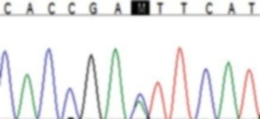

<!DOCTYPE html>
<html lang="en">
<head>
<meta charset="UTF-8">
<meta name="viewport" content="width=device-width, initial-scale=1.0">
<title>Surgical Insight Hub — Toxic Adenoma and Multinodular Toxic Goiter Monograph</title>
<link href="https://fonts.googleapis.com/css2?family=Playfair+Display:wght@400;600;700&family=Source+Serif+4:ital,opsz,wght@0,8..60,300;0,8..60,400;0,8..60,600;1,8..60,300;1,8..60,400&family=JetBrains+Mono:wght@400;500&display=swap" rel="stylesheet">
<link rel="stylesheet" href="../../css/theme.css?v=4.0.0">
<link rel="stylesheet" href="../../css/shared.css">
<script>
  const savedTheme = localStorage.getItem('sih-theme') || 'light';
  if (savedTheme === 'dark') document.documentElement.setAttribute('data-theme', 'dark');
</script>
<style>
:root {
  --primary:   #4C1D95; 
  --primary-dk:#2E1065;
  --primary-lt:#F5F3FF;
  --accent:    #7C3AED;
  --accent2:   #E11D48;
  --gold:      #D97706;
  --gold-lt:   #FEF3C7;
  --red:       #E11D48;
  --red-lt:    #FFF1F2;
  --bg:        #FAFAFA;
  --bg2:       #F4F4F5;
  --border:    #E5E7EB;
  --text:      #0F172A;
  --muted:     #64748B;
  --white:     #FFFFFF;
  --sidebar-w: 320px;
}
[data-theme="dark"] {
  --bg: #0A0702;
  --bg2: #140E05;
  --text: #F3F4F6;
  --muted: #A3A3A3;
  --border: rgba(255,255,255,0.08);
  --primary-lt: #2E1065;
  --white: #140E05;
}
*,*::before,*::after{box-sizing:border-box;margin:0;padding:0;}
html{scroll-behavior:smooth;}
body{font-family:'Source Serif 4',Georgia,serif;background:var(--bg);color:var(--text);font-size:16px;line-height:1.75;}

#sidebar {
  position: fixed; top: 0; left: 0; width: var(--sidebar-w); height: 100vh;
  background: var(--primary-dk); color: #F5F3FF;
  display: flex; flex-direction: column;
  z-index: 1000; overflow: hidden;
  transform: translateX(-100%);
  transition: transform 0.3s cubic-bezier(0.4, 0, 0.2, 1);
  box-shadow: 4px 0 24px rgba(0,0,0,0.4);
}
body.sidebar-open #sidebar { transform: translateX(0); }

#sidebar-overlay {
  position: fixed; top: 0; left: 0; width: 100vw; height: 100vh;
  background: rgba(46, 16, 101, 0.7); backdrop-filter: blur(3px);
  z-index: 950; opacity: 0; pointer-events: none; transition: opacity 0.3s ease;
}
body.sidebar-open #sidebar-overlay { opacity: 1; pointer-events: auto; }

#sidebar-toggle {
  position: fixed; top: 72px; left: 24px; z-index: 900;
  background: var(--primary); color: white;
  border: none; border-radius: 30px;
  padding: 10px 18px; font-family: 'JetBrains Mono', monospace; font-size: 13px; font-weight: 600;
  letter-spacing: 0.05em; cursor: pointer; box-shadow: 0 4px 12px rgba(0,0,0,0.25);
  display: flex; align-items: center; gap: 8px; transition: all 0.2s;
}
#sidebar-toggle:hover { background: var(--accent2); transform: translateY(-2px); }

#sidebar-header{padding:20px 20px 14px;border-bottom:1px solid rgba(255,255,255,0.08);flex-shrink:0;}
#sidebar-header .logo{font-family:'Playfair Display',serif;font-size:13px;font-weight:700;color:var(--accent2);letter-spacing:0.08em;text-transform:uppercase;margin-bottom:4px;}
#sidebar-header .sub{font-size:10.5px;color:rgba(245,243,255,0.6);letter-spacing:0.04em;}
#sidebar-search{padding:10px 14px;border-bottom:1px solid rgba(255,255,255,0.05);flex-shrink:0;}
#sidebar-search input{width:100%;background:rgba(255,255,255,0.05);border:1px solid rgba(255,255,255,0.1);border-radius:6px;color:#F5F3FF;padding:6px 10px;font-size:12px;font-family:'Source Serif 4',serif;outline:none;transition:border-color 0.2s;}
#sidebar-search input::placeholder{color:rgba(245,243,255,0.4);}
#sidebar-search input:focus{border-color:var(--accent2);}
#sidebar-nav{flex:1;overflow-y:auto;padding:8px 0 20px;}
#sidebar-nav::-webkit-scrollbar{width:4px;}
#sidebar-nav::-webkit-scrollbar-thumb{background:rgba(255,255,255,0.15);border-radius:2px;}
.vol-label{font-size:9.5px;font-weight:600;letter-spacing:0.12em;text-transform:uppercase;color:var(--accent2);padding:14px 18px 4px;}
.nav-item{display:block;padding:8px 18px 8px 22px;font-size:12.5px;color:rgba(245,243,255,0.8);text-decoration:none;border-left:2px solid transparent;transition:all 0.15s;line-height:1.4;}
.nav-item:hover{color:#fff;background:rgba(255,255,255,0.03);border-left-color:rgba(225,29,72,0.5);}
.nav-item.active{color:#fff;background:rgba(255,255,255,0.06);border-left-color:var(--accent2);font-weight:600;}
.nav-item .num{font-family:'JetBrains Mono',monospace;font-size:10px;color:rgba(245,243,255,0.4);margin-right:6px;}

#main{margin-left:0; min-height:100vh;}
#hero{background:linear-gradient(135deg,var(--primary-dk) 0%,#4C1D95 60%,#2E1065 100%);color:white;padding:120px 72px 60px;position:relative;overflow:hidden;}
#hero::before{content:'';position:absolute;top:-60px;right:-60px;width:380px;height:380px;background:radial-gradient(circle,rgba(225,29,72,0.15) 0%,transparent 70%);pointer-events:none;}
#hero::after{content:'';position:absolute;bottom:0;left:0;right:0;height:3px;background:linear-gradient(90deg,var(--accent2),var(--gold),transparent);}
#hero .eyebrow{font-family:'JetBrains Mono',monospace;font-size:11px;letter-spacing:0.16em;color:var(--accent2);text-transform:uppercase;margin-bottom:14px;}
#hero h1{font-family:'Playfair Display',serif;font-size:42px;font-weight:700;line-height:1.15;margin-bottom:10px;color:#fff;}
#hero .subtitle{font-size:18px;color:rgba(255,255,255,0.8);font-style:italic;margin-bottom:28px;}
#hero .badges{display:flex;gap:10px;flex-wrap:wrap;}
#hero .badge{background:rgba(255,255,255,0.1);border:1px solid rgba(255,255,255,0.2);border-radius:20px;padding:4px 14px;font-size:12px;color:rgba(255,255,255,0.95);font-family:'JetBrains Mono',monospace;}

.content-wrap{max-width:900px;margin:0 auto;padding:40px 48px 80px;}

.callout{margin:18px 0;padding:14px 18px;border-radius:0 8px 8px 0;border-left:4px solid;font-size:14px;line-height:1.65;}
.callout .label{font-family:'JetBrains Mono',monospace;font-size:10px;font-weight:600;letter-spacing:0.12em;text-transform:uppercase;display:block;margin-bottom:4px;}
.callout.pearl{background:var(--gold-lt);border-color:var(--gold);color:var(--text);}
.callout.pearl .label{color:var(--gold);}
.callout.warn{background:var(--red-lt);border-color:var(--red);color:var(--text);}
.callout.warn .label{color:var(--red);}

@media(max-width:900px) {
  .content-wrap { padding: 20px 20px 60px; }
  #hero { padding: 80px 20px 40px; }
  #hero h1 { font-size: 30px; }
  #sidebar-toggle { top: 64px; left: 16px; }
}
</style>
<link rel="icon" type="image/png" href="../../assets/images/Surgical_Insight_Hub_Logo.png">
</head>
<body>

<nav class="nav" id="mainNav">
  <div class="nav-left">
    <a href="../../index.html" class="nav-pill">
      <div class="nav-logo-img">
        
      </div>
      <div>
        <div class="nav-brand-text">Surgical Insight Hub</div>
        <div class="nav-brand-sub">The Residency Journal</div>
      </div>
    </a>
  </div>
  <div class="nav-links-pill">
    <a href="../../index.html">Home</a>
    <a href="../../notes.html" class="active">Notes</a>
    <a href="../operative_approach.html">Playbook</a>
    <a href="../../arena.html?v=4.0.0">MCQ Arena</a>
    <a href="../../podcast.html">Podcast</a>
    <a href="../../surgery-talk.html">Surgery Talk</a>
    <a href="../../about.html">About</a>
  </div>
  <div class="nav-right">
    <button class="theme-toggle" id="themeToggle" aria-label="Toggle Theme">
      <svg id="moonIcon" viewBox="0 0 24 24" width="18" height="18"><path d="M21 12.79A9 9 0 1 1 11.21 3 7 7 0 0 0 21 12.79z"></path></svg>
      <svg id="sunIcon" style="display:none;" viewBox="0 0 24 24" width="18" height="18"><circle cx="12" cy="12" r="5"></circle><line x1="12" y1="1" x2="12" y2="3"></line><line x1="12" y1="21" x2="12" y2="23"></line><line x1="4.22" y1="4.22" x2="5.64" y2="5.64"></line><line x1="18.36" y1="18.36" x2="19.78" y2="19.78"></line><line x1="1" y1="12" x2="3" y2="12"></line><line x1="21" y1="12" x2="23" y2="12"></line><line x1="4.22" y1="19.78" x2="5.64" y2="18.36"></line><line x1="18.36" y1="5.64" x2="19.78" y2="4.22"></line></svg>
    </button>
    <a href="https://t.me/sugicalInsightHub" target="_blank" class="nav-tg-btn" title="Join Telegram">
      <svg width="18" height="18" viewBox="0 0 24 24" fill="#f0d080"><path d="M12 0C5.37 0 0 5.37 0 12s5.37 12 12 12 12-5.37 12-12S18.63 0 12 0zm5.89 8.22l-1.97 9.28c-.15.66-.54.82-1.08.51l-3-2.21-1.45 1.39c-.16.16-.3.3-.61.3l.21-3.05 5.56-5.02c.24-.21-.05-.33-.37-.12l-6.87 4.33-2.96-.92c-.64-.2-.66-.64.14-.95l11.57-4.46c.54-.19 1.01.13.83.94z"/></svg>
    </a>
    <a href="../../arena.html?v=4.0.0" class="nav-btn arena-btn">MCQ Arena</a>
  </div>
</nav>

<div class="mob-nav-overlay" id="mobNavOverlay" onclick="closeMobNav()"></div>
<div class="mob-nav-sheet" id="mobNavSheet">
  <div class="mob-nav-handle"></div>
  <a href="../../index.html" onclick="closeMobNav()">Home</a>
  <a href="../../notes.html" onclick="closeMobNav()">Notes</a>
  <a href="../operative_approach.html" onclick="closeMobNav()">Playbook</a>
  <a href="../../podcast.html" onclick="closeMobNav()">Podcast</a>
  <a href="../../surgery-talk.html" onclick="closeMobNav()">Surgery Talk</a>
  <a href="../../arena.html" onclick="closeMobNav()">MCQ Arena</a>
  <a href="../../about.html" onclick="closeMobNav()">About</a>
  <a href="https://t.me/sugicalInsightHub" target="_blank" rel="noopener" onclick="closeMobNav()" style="color: var(--brand-gold); font-weight: 800;">Join Telegram Community</a>
</div>

<button id="sidebar-toggle" onclick="toggleSidebar()">
  <span>📜</span> Chapter Navigation
</button>
<div id="sidebar-overlay" onclick="closeSidebar()"></div>

<aside id="sidebar">
  <div id="sidebar-header">
    <div class="logo">Surgical Insight Hub</div>
    <div class="sub">Thyroid Dx Textbook Series</div>
  </div>
  <div id="sidebar-search">
    <input type="text" placeholder="Search chapters..." oninput="filterNav(this.value)">
  </div>
  <nav id="sidebar-nav">
    <div class="vol-label">All 25 Endocrine Chapters</div>
    <a class="nav-item" href="endocrine_ch01_regulation_of_thyroid_function.html"><span class="num">Ch 1</span>Regulation of Thyroid Function, Synthesis, and Function of Thyroid Hormones</a>
<a class="nav-item" href="endocrine_ch02_tests_of_thyroid_function.html"><span class="num">Ch 2</span>Tests of Thyroid Function</a>
<a class="nav-item" href="endocrine_ch03_thyroid_autoantibodies.html"><span class="num">Ch 3</span>Thyroid Autoantibodies</a>
<a class="nav-item" href="endocrine_ch04_nonisotopic_thyroid_imaging.html"><span class="num">Ch 4</span>Nonisotopic Thyroid Imaging</a>
<a class="nav-item" href="endocrine_ch05_nontoxic_goiter.html"><span class="num">Ch 5</span>Nontoxic Goiter</a>
<a class="nav-item" href="endocrine_ch06_thyroid_nodule.html"><span class="num">Ch 6</span>Thyroid Nodule</a>
<a class="nav-item" href="endocrine_ch07_hashimoto_s_thyroiditis.html"><span class="num">Ch 7</span>Hashimoto´s Thyroiditis</a>
<a class="nav-item" href="endocrine_ch08_postpartum_thyroiditis_and_sil.html"><span class="num">Ch 8</span>Postpartum Thyroiditis and Silent Thyroiditis</a>
<a class="nav-item" href="endocrine_ch09_acute_and_subacute_thyroiditis.html"><span class="num">Ch 9</span>Acute and Subacute Thyroiditis</a>
<a class="nav-item" href="endocrine_ch10_classification_and_etiopathoge.html"><span class="num">Ch 10</span>Classification and Etiopathogenesis of Hypothyroidism</a>
<a class="nav-item" href="endocrine_ch11_congenital_hypothyroidism.html"><span class="num">Ch 11</span>Congenital Hypothyroidism</a>
<a class="nav-item" href="endocrine_ch12_central_hypothyroidism.html"><span class="num">Ch 12</span>Central Hypothyroidism</a>
<a class="nav-item" href="endocrine_ch13_diagnosis_and_treatment_of_hyp.html"><span class="num">Ch 13</span>Diagnosis and Treatment of Hypothyroidism</a>
<a class="nav-item" href="endocrine_ch14_graves_disease.html"><span class="num">Ch 14</span>Graves´ Disease</a>
<a class="nav-item" href="endocrine_ch15_graves_ophthalmopathy.html"><span class="num">Ch 15</span>Graves´ Ophthalmopathy</a>
<a class="nav-item" href="endocrine_ch16_treatment_of_graves_disease.html"><span class="num">Ch 16</span>Treatment of Graves´ Disease</a>
<a class="nav-item active" href="endocrine_ch17_toxic_adenoma_and_multinodular.html"><span class="num">Ch 17</span>Toxic Adenoma and Multinodular Toxic Goiter</a>
<a class="nav-item" href="endocrine_ch18_pathogenesis_of_thyroid_carcin.html"><span class="num">Ch 18</span>Pathogenesis of Thyroid Carcinoma</a>
<a class="nav-item" href="endocrine_ch19_differentiated_thyroid_carcino.html"><span class="num">Ch 19</span>Differentiated Thyroid Carcinoma of Follicular Origin</a>
<a class="nav-item" href="endocrine_ch20_medullary_carcinoma.html"><span class="num">Ch 20</span>Medullary Carcinoma</a>
<a class="nav-item" href="endocrine_ch21_anaplastic_and_other_forms_of_.html"><span class="num">Ch 21</span>Anaplastic and Other Forms of Thyroid Carcinoma</a>
<a class="nav-item" href="endocrine_ch22_new_medical_treatment_for_thyr.html"><span class="num">Ch 22</span>New (Medical) Treatment for Thyroid Carcinoma</a>
<a class="nav-item" href="endocrine_ch23_thyroid_physiology_and_thyroid.html"><span class="num">Ch 23</span>Thyroid Physiology and Thyroid Diseases in Pregnancy</a>
<a class="nav-item" href="endocrine_ch24_non_thyroidal_illness.html"><span class="num">Ch 24</span>Non-thyroidal Illness</a>
<a class="nav-item" href="endocrine_ch25_drugs_and_other_substances_int.html"><span class="num">Ch 25</span>Drugs and Other Substances Interfering with Thyroid Function</a>

  </nav>
</aside>

<main id="main">
<header id="hero">
  <div class="eyebrow">Endocrine Surgery · Chapter 17</div>
  <h1>Toxic Adenoma and Multinodular Toxic Goiter</h1>
  <p class="subtitle">Structured Surgical Monograph formatted with fluid prose, inline textbook diagnostic plates, and clinical guidance.</p>
  <div class="badges">
    <span class="badge">Chapter 17</span>
    <span class="badge">Inline Plates</span>
    <span class="badge">Thyroid Dx PDF</span>
  </div>
</header>

<div class="content-wrap">
  <section class="topic">
    
    <div class="callout pearl" style="margin-bottom:28px;">
      <span class="label">🎓 TEXTBOOK MONOGRAPH — THYROID DX</span>
      Full surgical monograph extracted directly from <strong>Thyroid Pathology and Laboratory Diagnostics</strong> (Chapter 17: Toxic Adenoma and Multinodular Toxic Goiter). Features complete text, formatted clinical guidance, and inline textbook figures.
    </div>
<ul style="margin:12px 0 20px 20px;">
<li style="margin-bottom:8px; line-height:1.65;"><strong>Toxic Adenoma and</strong> Multinodular Toxic Goiter Massimo Tonacchera and Dagmar Führer Contents</li>
</ul>
<h3 style="font-family:'Playfair Display',serif; font-size:20px; color:var(--primary); margin:32px 0 14px; border-bottom:1px solid var(--border); padding-bottom:6px;">Introduction ......................................................................................</h3>

                <div style="display:flex; gap:16px; margin:20px 0; padding:16px; border-radius:14px; border:1px solid var(--border); background:var(--bg2); align-items:center;">
                  <div style="width:180px; min-width:180px; height:140px; border-radius:10px; overflow:hidden; border:1px solid var(--border); background:#fff; display:flex; align-items:center; justify-content:center; padding:6px; flex-shrink:0;">
                    
                  </div>
                  <div style="flex:1;">
                    <div style="font-family:'JetBrains Mono',monospace; font-size:11px; font-weight:700; color:var(--accent2); text-transform:uppercase; margin-bottom:6px;">Textbook Illustration &amp; Diagnostic Plate</div>
                    <div style="font-size:13.5px; color:var(--muted); line-height:1.5;">High-resolution diagnostic plate illustrating introduction ...................................................................................... in Chapter 17.</div>
                  </div>
                </div>
<ul style="margin:12px 0 20px 20px;">
<li style="margin-bottom:8px; line-height:1.65;"><strong>Clinical Aspects and</strong> Epidemiology .............................................................</li>
</ul>
<p style="font-size:16px; line-height:1.75; margin-bottom:16px; color:var(--text);">Pathology of TA and TMNG .................................................................... Biochemical and Growth Properties of Autonomous Tissue ................................... Constitutive cAMP Activation as a/the Molecular Hallmark of Autonomous Tissue ......... TA and TMNG in Children and Adolescents ...................................................</p>
<ul style="margin:12px 0 20px 20px;">
<li style="margin-bottom:8px; line-height:1.65;"><strong>Clinical Aspects and</strong> Treatment of TA and TMNG ............................................</li>
<li style="margin-bottom:8px; line-height:1.65;"><strong>Signs and Symptoms</strong> .........................................................................</li>
</ul>
<h3 style="font-family:'Playfair Display',serif; font-size:20px; color:var(--primary); margin:32px 0 14px; border-bottom:1px solid var(--border); padding-bottom:6px;">Diagnosis .....................................................................................</h3>

                <div style="display:flex; gap:16px; margin:20px 0; padding:16px; border-radius:14px; border:1px solid var(--border); background:var(--bg2); align-items:center;">
                  <div style="width:180px; min-width:180px; height:140px; border-radius:10px; overflow:hidden; border:1px solid var(--border); background:#fff; display:flex; align-items:center; justify-content:center; padding:6px; flex-shrink:0;">
                    
                  </div>
                  <div style="flex:1;">
                    <div style="font-family:'JetBrains Mono',monospace; font-size:11px; font-weight:700; color:var(--accent2); text-transform:uppercase; margin-bottom:6px;">Textbook Illustration &amp; Diagnostic Plate</div>
                    <div style="font-size:13.5px; color:var(--muted); line-height:1.5;">High-resolution diagnostic plate illustrating diagnosis ..................................................................................... in Chapter 17.</div>
                  </div>
                </div>
<ul style="margin:12px 0 20px 20px;">
<li style="margin-bottom:8px; line-height:1.65;"><strong>Other Imaging Techniques</strong> ...................................................................</li>
</ul>
<h3 style="font-family:'Playfair Display',serif; font-size:20px; color:var(--primary); margin:32px 0 14px; border-bottom:1px solid var(--border); padding-bottom:6px;">Treatment of TA and TMNG ................................................................</h3>
<p style="font-size:16px; line-height:1.75; margin-bottom:16px; color:var(--text);">Antithyroid Drugs ............................................................................ Surgery ....................................................................................... Radioiodine Therapy ......................................................................... Alternative Techniques for Ablation of Thyroid Autonomy ...................................</p>
<h3 style="font-family:'Playfair Display',serif; font-size:20px; color:var(--primary); margin:32px 0 14px; border-bottom:1px solid var(--border); padding-bottom:6px;">Management of Familial Nonautoimmune Hyperthyroidism ..................................</h3>
<ul style="margin:12px 0 20px 20px;">
<li style="margin-bottom:8px; line-height:1.65;">Follow-Up .......................................................................................</li>
</ul>
<h3 style="font-family:'Playfair Display',serif; font-size:20px; color:var(--primary); margin:32px 0 14px; border-bottom:1px solid var(--border); padding-bottom:6px;">Summary and Conclusions ......................................................................</h3>
<h3 style="font-family:'Playfair Display',serif; font-size:20px; color:var(--primary); margin:32px 0 14px; border-bottom:1px solid var(--border); padding-bottom:6px;">References .......................................................................................</h3>
<p style="font-size:16px; line-height:1.75; margin-bottom:16px; color:var(--text);">M. Tonacchera (*) Department of Clinical and Experimental Medicine, Endocrinology Unit, University Hospital of Pisa, University of Pisa, Pisa, Italy e-mail: massimo.tonacchera@med.unipi.it D. Führer Department of Endocrinology, Diabetes and Metabolism, University Hospital Essen, University Duisburg-Essen, Essen, Germany e-mail: dagmar.fuehrer@uk-essen.de # Springer International Publishing AG, part of Springer Nature 2018 P. Vitti, L. Hegedüs (eds.), Thyroid Diseases, Endocrinology, Abstract Toxic thyroid adenoma (TA) is a well-encapsulated homogeneous neoplasia secreting thyroid hormones in the absence of a TSH stimulus, in an otherwise normal gland. The diagnosis involves the ability to take up iodide autono- mously and the decreased or suppressed uptake in the rest ofthe thyroid, as demonstrated by scintigraphy. Toxic multinodular goiter (TMNG) encom- passes a spectrum of pathologies ranging from a single hyperfunctioning nodule within an enlarged thyroid gland, which has additional normal or nonfunctioning nodules, to multiple hyperfunctiong nodules.Toxic adenoma is more common in women, and can occur at any age, being more frequent between the ages of 30 and 60 years, while TMNG tends to occur at older age. The prevalence of TA and TMNG as a cause of thyrotoxicosis varies throughout the world, and higher prevalences are observed in areas with mild to moderate iodine deficiency. Both TA and TMNG are characterized by the presence of autonomous tissues. TA are monoclonal benign encapsulated tumors that grow, metabolize iodide and secrete thyroid hormones indepen- dently of TSH control. The metabolism in autonomous adenomas is charac- terized mainly by a greatly increased iodine accumulation and consequently by a high iodination rate. Activating TSHR mutations and with lower fre- quencies Gs-alpha mutations are the main causes of TA or in hyper- functioning nodules within TMNGs. Furthermore, a recent study has identified a second hit mutation in enhancer of zeste homolog 1 (EZH1) in TA. A significant proportion of patients with TA or TMNG develops thyro- toxicosis, and this is directly related to the duration the goiter has been present. Typically, the thyrotoxicosis comes about insidiously, hence the patient is often unaware of the symptoms. This is particularly seen in the elderly. The symptoms of thyrotoxicosis are those observed with other causes of thyroid hormone excess. The diagnosis of TA and TMNG is based on clinical examination, thyroid function tests, thyroid ultrasound and scintiscanning. Due to the underlying molecular defect, there is no sponta- neous resolution of TA and TMNG. Hence ablative treatment is generally indicated, once thyroid autonomy is diagnosed with subclinical or overt hyperthyroidism. The two most widely used ablation modalities are thyroid surgery and radioiodine. Both options, their advantages and potential risks should be openly discussed with the patient and the final decision will be based on patient characteristics (age, the severity of hyperthyroidism, goitre size and extent of nodular thyroid disease, concomitant non-thyroid illness), patient’s preferences, possibly costs and and also logistics. Keywords Toxic adenoma · Toxic multinodular goiter · Goiter · TSH receptor mutations · Cell proliferation · Hyperthyroidism · 131-I therapy · Surgical treatment · Antithyroid drugs M. Tonacchera and D. Führer</p>
<h3 style="font-family:'Playfair Display',serif; font-size:20px; color:var(--primary); margin:32px 0 14px; border-bottom:1px solid var(--border); padding-bottom:6px;">Introduction</h3>
<p style="font-size:16px; line-height:1.75; margin-bottom:16px; color:var(--text);">Toxic thyroid adenoma (TA) is a well-encapsulated homogeneous neoplasia secret- ing thyroid hormones in the absence of a TSH stimulus, in an otherwise normal gland. The diagnosis involves the ability to take up iodide autonomously and the decreased or suppressed uptake in the rest of the thyroid, as demonstrated by scintigraphy. Toxic multinodular goiter (TMNG) encompasses a spectrum of pathol- ogies ranging from a single hyperfunctioning nodule within an enlarged thyroid gland, which has additional normal or nonfunctioning nodules, to multiple hyper- functiong nodules. TA and TMNG are mainly present in iodine-deficient areas and TMNG may represent the natural evolution of diffuse or nodular goiters (Holzapfel et al. 1997; Tonacchera et al. 1998a; Krohn et al. 2005). Nodular goiters (NGs) are clinically recognizable enlargements of the thyroid gland. In the absence of thyroid dysfunction, autoimmune thyroid disease and thyroid malignancy, they constitute an entity described as nontoxic NG (Hegedus et al. 2003; Krohn et al. 2005; Studer et al. 1989). NG occurs both endemically, mainly related to iodine deficiency, and sporadically. In the early phase of goitrogenesis goiters are diffuse and, with time, tend not only to grow but also to become nodular. In general, NG can be divided into solitary nodular and multinodular thyroid disease. Concomitantly with growth, thyroid function often becomes autonomous. That is, thyroid hormone secretion becomes independent of thyrotropin secretion (thyroid autonomy) and therefore the patients gradually develop subclinical and eventually overt hyperthyroidism. Thus, the natural history is characterized clinically by thyroid growth, nodule formation, and the development of functional autonomy (Elte et al. 1990). The clinical forms include both TA and TMNG and are responsible for the development of non- autoimmune hyperthyroidism (Krohn et al. 2005).</p>
<ul style="margin:12px 0 20px 20px;">
<li style="margin-bottom:8px; line-height:1.65;"><strong>Clinical Aspects and</strong> Epidemiology</li>
</ul>
<p style="font-size:16px; line-height:1.75; margin-bottom:16px; color:var(--text);">In the clinical setting, TA often presents as a palpable thyroid nodule, able to concentrate radioiodine avidly with functional inhibition of the extranodular thyroid tissue at thyroid scintiscan. Rarely two or more toxic adenomas coexist in an otherwise normal thyroid gland (multiple adenomatosis, multifocal autonomy (Fig. 1)) (Krohn et al. 2005). TA is more common in women, with a female:male ratio ranging from 6:1 to 15:1, and can occur at any age, being most frequent between the ages of 30 and 60, while TMNG tends to occur at an older age (Reinwein et al. 1988; Krohn et al. 2005). TMNG has also been termed “Plummer’s disease.” The prevalence of TA, as a cause of thyrotoxicosis, varies throughout the world and the determination of the true prevalence may be hampered by the difficulty in distinguishing between true TA and hyperfunctioning nodules within a goiter (see below) (Krohn et al. 2005). In the United States, an iodine-sufficient Toxic Adenoma and Multinodular Toxic Goiter country, TAs are reported to account for only 2% of all cases of hyperthyroidism (Hamburger 1987), whereas higher prevalences are observed in Europe (areas with mild to moderate iodine deficiency) (Reinwein et al. 1988; Lauberg et al. 1991). Before iodine prophylaxis, in some areas of Switzerland and Germany, TAs accounted for more than 30% of cases of thyrotoxicosis (Baltisberger et al. 1995). In a prospective multicenter study performed in six European countries, 9% of thyrotoxic patients had a TA, with a prevalence more than three times higher in areas with a relatively low iodine intake compared with areas in which iodine intake was Fig. 1 99mtechnecium scintiscan of a TA and a TMNG. Increased focal uptake in the thyroid lobe with suppression of the surrounding thyroid tissue and contralateral lobe (TA) and increased multifocal radionuclide uptake in both the right and the left thyroid lobe, with suppression of surrounding tissue, is seen. Both patients presented with overt hyperthyroidism and a left-sided nodule (case 1) and multinodular goiter (case 2) with a partially cystic nodule in the left and a small nodule in the right upper lobe on ultrasound M. Tonacchera and D. Führer higher (Reinwein et al. 1988). In particular, the prevalence of TA in the United Kingdom was 10% in iodine-deficient areas and 3% in iodine-sufficient areas. Similarly, in a retrospective study in Sicily, TA was twice as common in an iodine- deficient compared to an iodine-sufficient area (Belfiore et al. 1985). Denmark was an area of iodine deficiency, when mandatory iodine fortification of table salt and salt in bread was initiated in 2000 and a program for monitoring iodine intake and thyroid diseases developed (Dan Thyr program) (Laurberg et al. 2006). In years 1997–2000 the overall standardized incidence rate per 100,000 person-years for hyperthyroidism was 81.6 higher in Aalborg (moderate iodine-deficient area) com- pared to Copenhagen (mild iodine-deficient area). TA represented 5.7% of all cases of hyperthyroidism (Carle et al. 2011) and the incidence rate of TA rose with age and peaked in the sixth decade (Carle et al. 2011). TA and TMNG have a multifaced clinical presentation. It spans from a single hyperfunctioning nodule, where several normal or nonfunctioning nodules also coexist, to a nodular goiter where multiple hyperfunctioning areas, not confined to distinct nodules, are barely distinguishable from other nodules (Krohn et al. 2005; Tonacchera et al. 2010). TMNG is the most common cause of hyperthyroidism in iodine-deficient areas. In a landmark study the incidence of different types of hyperthyroidism was compared between East Jutland, an area of low iodine intake, and Iceland, a country with adequate iodine intake (Lauberg et al. 1998). In the area of low iodine intake, toxic multinodular goiter was the most common cause of hyperthyroidism, while it was infrequent in Iceland, where Graves’ disease was the dominant cause of hyperthyroidism. The age distribution of new cases of hyperthyroidism also demonstrated large differences between the two regions. In Iceland, the majority of cases of hyperthyroidism were observed in people aged 20–60 years. The typical hyperthyroid patient was a young to middle-aged woman with Graves’ disease. In Jutland, there was a peak of hyperthyroidism in the elderly, the typical patient being an elderly woman with toxic multinodular goiter. Further- more, the incidence of hyperthyroidism was significantly higher in Jutland (38.7/ 100000/year) than in Iceland (23.6/100000/year). In the Dan Thyr program, TMNG constituted 44% of all cases of hyperthyroidism (Graves’ diseases accounted for 37% of cases), with a higher incidence in Aalborg (moderate iodine deficient) than in Copenhagen (mild iodine deficient). With advancing age above 45 years, TMNG increasingly outnumbered Graves’ disease (Carle et al. 2011). The critical role of iodine deficiency in the development of thyroid autonomy is also demonstrated by the sustained decreased incidence of this disease that occurred in several countries including Switzerland (Baltisberger et al. 1995), Denmark (Carle et al. 2011), and many others (Hegedus et al. 2003; Krohn et al. 2005) after institution and implementation of iodine prophylaxis. In a cross-sectional study on the spectrum of thyroid disorders occurring in a community with mild-to-moderate iodine deficiency in the South of Italy (Aghini-Lombardi et al. 1999), it was shown that the prevalence of goiter, thyroid nodularity, and functional autonomy increased with age. Thus, the prevalence of goiter rose from 16% in children to 60% in adults. Presence of nodular goiter was negligible in the 15–25 year age group, but increased up to 29% in the 56–65 year Toxic Adenoma and Multinodular Toxic Goiter age group. Thyroid autonomy was rare in children and progressively increased with age to reach 15% in the older age group. Hyperthyroidism was mainly due to toxic nodular goiter and was more frequent in aged people. These data indicate that the natural history of functional autonomy and nodular goiter is that they evolve together (Fig. 2). The few longitudinal studies in patients with a multinodular goiter confirm these cross-sectional data. In one study, 11% of 90 patients with nontoxic multi- nodular goiter developed hyperthyroidism within 1–7 years (Als et al. 1995). Pathology of TA and TMNG TAs are well-defined encapsulated lesions (adenomas) that are characteristically surrounded by a complete fibrous capsule and have a homogeneous pattern of growth. Variations in architecture mostly depend on the degree of cellularity and presence and size of follicles. Pseudo-papillary formations may also be present. Adenomas are classified as microfollicular, normofollicular, or macrofollicular. Cells lining the follicle tend to be tall cuboidal rather than flattened, and the nuclear/cytoplasmatic ratio is likely to be decreased due to cytoplasmic prominence (Viacava et al. 2007). The basic process in the pathogenesis of TMNG is the proliferation of follicular epithelial cells resulting in the formation of new follicles (Studer et al. 1989; Krohn et al. 2005, 2007; Roger et al. 2010). During goitrogenesis new daughter follicles are growing out from single cells or small families of cells of mother follicles. If the progenitor cells are different (with respect to their iodination capacity and their growth rate) clusters of follicles of different size and different function must necessarily arise with time. Auton- omously hyperfunctioning follicles may occur in clusters adjacent to each other or they Iodine deficiency Goitrogens Pregnancy Smoking Selenium deficiency Genetic susceptibility Proliferation H2O2 DNA damage Mutagenesis Age Nodule/goitre development Fig. 2 Exogenous and endogeneous factors contributing to nodule and goiter development. Both are characterized by increased thyrocyte proliferation, which together with increased oxidative stress augments the likelihood of increased mutagenesis M. Tonacchera and D. Führer may be intermingled with normally functioning follicles giving the typical patchy scintigraphic patterns seen at thyroid scintiscan (Fig. 1). The nodular growth pattern is the ultimate outcome and the nodular areas may contain hyper- and hypofunctional follicles. More frequently nodules are constituted by multiple microfollicular and macro- follicular aggregates not confined by a capsule (hyperplastic nodules) (Studer et al. 1992; Viacava et al. 2007; Krohn et al. 2005). Nodules are separated by irregular strands of apparently normal micro-macrofollicular parenchyma. Secondary changes that can be seen at the gross level include hemorrhage, fibrosis, calcification, ossification, and cystic degeneration, all of which contribute to heterogeneous appearance of growing goiters. Biochemical and Growth Properties of Autonomous Tissue Both TA and TMNG are characterized by the presence of autonomous tissues (Corvilain et al. 2000; Dremier et al. 1996; Deleu et al. 2000; Krohn et al. 2000). TAs are monoclonal benign encapsulated tumors that grow, metabolize iodide, and secrete thyroid hormones independently of TSH control. The metabolism in auton- omous adenomas is characterized mainly by a greatly increased iodine accumulation and consequently by a high iodination rate. TAs are characterized by an increased iodide transport, increased expression of thyroperoxidase (TPO), and sodium iodine symporter (NIS) mRNAs while thyroglobulin (TG) and TSH receptor (TSHR) gene expression are unchanged (Corvilain et al. 2000; Deleu et al. 2000). The normal expression of E-cadherin gene fits well with the fact that TAs are not invasive and only exceptionally cancerous. As tumors, autonomous adenomas seem to grow rather slowly and adenomatous cells seem to have a longer lifespan than normal cells. TAs have a Ki67 labeling index, a marker of cells in the active phases of the cell cycle, that is higher with respect to both the quiescent tissue surrounding the tumor and the normal thyroid tissue, but definitely lower than that observed in other neoplastic lesions (Corvilain et al. 2000; Krohn et al. 2005). While in a normal thyroid gland, follicles are functioning in a similar way, respond to TSH in a highly predictable manner, and contain identically iodinated thyroglobulin, as shown by 125-I autoradiographs after equilibrium labeling, folli- cles in TMNG have a heterogeneous morphology and a heterogenous pattern of iodine uptake. On the one hand, a follicle may no longer participate in iodine turnover (cold follicle), while on the other hand a follicle may display normal or even high iodine turnover (hot follicle), which may be independent of TSH regula- tion (autonomy, Fig. 3) (Krohn et al. 2000; Corvilain et al. 2000). Constitutive cAMP Activation as a/the Molecular Hallmark of Autonomous Tissue The group of Dumont and Vassart were among the first to suggest that any molecular lesion leading to constitutive activity of the cAMP cascade (TSH receptor, G protein, cyclase, protein kinase) could be responsible for the growth and functional Toxic Adenoma and Multinodular Toxic Goiter properties of toxic nodules (Dumont et al. 1992). In support of this, it was shown that transgenic mice expressing adenosine A2 receptor in the thyroid mimic the pheno- type of thyroid autonomy in humans (Ledent et al. 1992). After somatic mutations impairing GTPase activity of Gs alpha had been found in some TA, it was logical to investigate the TSHR gene. In the first study from the group of Dumont and Vassart (Parma et al. 1993), 9 out of 11 TAs studied were shown to harbor an activating TSHR mutation. Subsequent studies have confirmed this observation, describing mutations in other residues (Parma et al. 1997; Porcellini et al. 1994; Paschke et al. 1994; Russo et al. 1996; Tassi et al. 1999; Tonacchera et al. 1996, 1999; Fuhrer et al. 1997, 1998) and with other amino acid exchanges. All the mutations found are heterozygous, as expected from gain-of-function mutations with a dominant effect, and confined to the adenomatous tissue (somatic mutations). In vitro studies confirmed that these mutants result in constitutive stimulation of adenylylcylase and intracellular cAMP accumulation. These experiments also showed that the wild-type TSH receptor displays a certain/considerable degree of basal constitutive activity (Parma et al. 1993; Van Sande et al. 1995; Paschke et al. 1994; Tonacchera et al. 1996). Furthermore, some mutants were also shown Activating TSH receptor  mutation (e.g. Asp 633 Glu) Adaptation: proliferation and/or alteration of TH synthesis Selection (thyrocyte with somatic TSHR mutation): growth advantage, secondary e.g. EZHI mutation, TSH-independence, autonomous TH production Individual predisposition and exogenous factors e.g. iodine deficiency . . . . . . . . . . . Hyperthyroidism Toxic nodule on scitntiscan Fig. 3 Development of thyroid autonomy. Mutagenesis, which results in a somatic gain-of- function TSH receptor mutation in a thyrocyte, confers growth and functional advantage over other thyrocytes that harbor the wild-type TSHR. Over time an autonomous nodule develops and increasingly contributes to thyroid hormone production, independent of TSH, the latter in turn starts to decrease. When the nodule reaches a critical mass, hyperthyroidism becomes clinically manifest. TSH levels are low and the surrounding tissue is suppressed on scintiscan with the toxic adenoma appearing as a “hot” nodule” (see also Fig. 1) M. Tonacchera and D. Führer to activate the phospholipase C-dependent cascade (Parma et al. 1995; Van Sande et al. 1995; Fuhrer et al. 1997). Interestingly, different mutant receptors varied in their level of constitutive activity, and while showing decreased level of expression when transfected in COS-7 cells, bound radiolabeled bovine TSH with higher affinity than the wild- type TSHR (Parma et al. 1995; Tonacchera et al. 1996). Most mutants respond to stimulation by TSH by further increasing both cAMP and inositolphosphate accumulation, but the magnitude is highly variable, with some mutations behaving as if they were fully activated (e.g., mutant 486F for cAMP) (Parma et al. 1995) or displaying very little stimulation properties (e.g., mutation 672 for inositol phos- phates) (Van Sande et al. 1995). Other mutants (N670S for example) clearly show a dissociation in the ability of the receptor to respond to bovine TSH for the Gs alpha and Gq alpha–dependent regulatory cascades, favoring the idea of the existence of multiple active conformations of the TSH receptor, with differential capabilities to couple to Gs alpha and Gq alpha (Tonacchera et al. 1996). Distinct biological properties of various TSHR mutations have also been dem- onstrated in rat thyroid follicular cells and human thyrocytes with characteristics not identical to analysis of these mutations in nonthyroid COS-7 cells. This demon- strates the importance of the cell context for biological assessment (Fuhrer et al. 2003). In addition, proteome analyses have demonstrated that the signaling proper- ties of the mTSHR are similar, but not identical, and include involvement of other non-PKA pathways, at least in the rat FRTL-5 cells (Krause et al. 2012). Further- more, using mTSHR stably expressing FRTL-5 cells as in vitro model of thyroid autonomy, it was shown that exposure to iodine in thyroid autonomy may down- regulate transcription of genes involved in cell proliferation (Muller et al. 2011). This is in line with epidemiological observations from the Pescopagano study (Aghini-Lombardi et al. 1999; Aghini-Lombardi et al. 2013), suggesting that improved iodine supply in early stage of thyroid autonomy may actually decrease the likelihood of progression of clinically relevant thyroid autonomy. Subsequent studies confirmed that activating TSHR mutations are the main cause of TA, with prevalence of somatic TSHR mutations in up to 82% of TA (Krohn et al. 1998; Nogueira et al. 1999; Tonacchera et al. 1998a, b; 2000; Georgopoulos et al. 2003; Gozu et al. 2006; Palos-Paz et al. 2008). Interestingly, a much lower frequency of TSHR mutations was found in other studies, in particular from Japan and the USA (Takeshita et al. 1995; Gabriel et al. 1999). This discrepancy might be due to differences in the population studied, to different criteria used to define toxic thyroid adenoma, or most likely due to differences in the methodological approaches applied for TSHR mutation detection. Furthermore, Gs-alpha mutations (gsp onco- gene) were identified in up to 30% of toxic thyroid adenomas showing that alter- ations of other proteins may also contribute to activation of the cAMP pathway (Krohn et al. 2005). Similarly to TAs, activating TSHR mutations have also been demonstrated in hyperfunctioning nodules (either adenomas or hyperplastic nodules) within TMNGs (Duprez et al. 1997; Holzapfel et al. 1997; Tonacchera et al. 1998b, 2000). More- over, at autoradiography microscopic foci of increased uptake of 125-I have been Toxic Adenoma and Multinodular Toxic Goiter demonstrated in euthyroid goiters in iodine-deficient areas. Using archival tissues of euthyroid goiters, which had originally been prepared for autoradiography, somatic TSHR mutations were identified in areas with high 125-I labeling (Krohn et al. 2000). These data indicate that TSHR mutations are implicated in the evolution of the majority of hyperfunctioning areas of toxic multinodular goiter (Fig. 3). The molecular mechanisms, whereby cAMP stimulation results in sustained proliferation and differentiation in human thyrocytes, are still not fully understood (Dremier et al. 1996). Cyclic AMP is known to stimulate the cAMP-dependent protein kinase A (PKA), which in turn phosphorylates cytoplasmic and nuclear target proteins (Dumont et al. 1992; Roger et al. 2010). One of the best characterized PKA substrates is the nuclear transcription factor cAMP response element binding protein (CREB) which stimulates the transcription of cAMP-responsive genes after its phosphorylation by PKA. In a series of TAs studied by Brunetti et al. (Brunetti et al. 2000), Western blot analysis of the phosphorylated form of CREB (P-CREB) revealed that P-CREB content was significantly lower in tumor thyroid tissue compared with that of the surrounding normal tissue. These data suggest that CREB phosphorylation was specifically reduced in TAs. It has also been shown that the reduced phosphorylation of CREB in toxic adenomas neither reflects a reduced level of adenylate cyclase nor PKA activities, but suggests that CREB phosphorylation can be modulated by other mechanisms independent of cAMP/ PKA pathways. Moreover, microinjection of an activated TSH receptor mutation into dog thyreocytes was clearly sufficient to stimulate the proliferation of cells and to enhance the expression of thyroglobulin and thyroperoxidase genes (Dremier et al. 1997). In contrast, microinjection of the catalytic subunit of PKA in dog thyrocytes triggered TPO overexpression, but neither enhanced TG gene expression nor induced thyroid proliferation. These data suggest that, in addition to PKA activation, other cAMP-dependent mechanism(s) or cAMP-regulated binding pro- teins could be involved in the TSHR-dependent stimulation of mitogenesis and gene expression in thyroid cells, and this is also supported by data from proteomic studies (Krause et al. 2012). In the same context, it has been shown that cAMP directly activates a new guanine nucleotide exchange factor named EPAC, acting as a stimulus of the small G protein Rap1, which in turn would stimulate proliferation of thyrocytes (Dremier et al. 1997). Furthermore, a recent study applying whole- exome sequencing has identified a second hit mutation in enhancer of zeste homolog</p>
<ul style="margin:12px 0 20px 20px;">
<li style="margin-bottom:8px; line-height:1.65;"><strong>1 (EZH1) in</strong> TAs (Calebiro et al. 2016). This mutation occurs recurrently in one</li>
</ul>
<p style="font-size:16px; line-height:1.75; margin-bottom:16px; color:var(--text);">codon (571 Gln–Arg) of EZH1, a catalytic subunit of the polycomb repressive complex 2, which is involved in embryonic stem cell pluripotency and plasticity and has been linked to cancer aggressiveness. Functional characterization of this EZH1 mutation in rat thyroid cells showed that it confers increased histone H3 trimethylation and promotes thyroid proliferation. Interestingly, by screening a large cohort of 123 TAs, EZH1 mutations were found in 27% of TAs, and only in tumors, which also harbored a somatic TSHR mutation. This novel finding adds a first piece to the puzzle and ongoing conceptual discussion that additional alterations, besides constitutive TSHR or Gs alpha mutations, may be required for development of a clinically relevant TA. However, not all TAs displayed an EZH1 mutation, and from M. Tonacchera and D. Führer screening of other benign and malignant thyroid tumors it appears that EZH1 mutations at least in codon 571 are not principally involved in regulation of proliferation in these tumors (Calebiro et al. 2016). TA and TMNG in Children and Adolescents Juvenile thyrotoxicosis is a rare disorder with an incidence of person-years (ages 0–15 years) in Caucasians. In a recent Danish nationwide study the overall incidence was 1.58/100,000 person-years (Havgaard Kjaer et al. 2015). Graves’ disease accounts for more than 96% of cases, while hyperfunctional thyroid nodules and TA account for less than 3% (Lavard et al. 1994; Havgaard Kjaer et al. 2015). Constitutive activation of the TSHR resulting from germline mutations is responsi- ble for most familial forms of non-autoimmune hyperthyroidism and more than 35 families harboring different activating TSHR germline mutations have been identified to date (Fuhrer et al. 2000; Gozu et al. 2010). In addition occurrence of a TSHR germline mutation can cause sporadic congenital hyperthyroidism (Kopp et al. 1995; Gozu et al. 2010). Only few cases of toxic thyroid adenomas in childhood have been reported and the incidence of this pathology is unknown. Somatic TSHR mutations have been identified in these TAs with the first case of congenital hyperthyroidism caused by a large solitary adenoma harboring a somatic TSHR mutation described in 1997 (Kopp et al. 1997; Kraemer et al. 2009). More recent case studies have also reported somatic TSHR mutations in a girl with three TAs and in a boy with two TAs (Ly et al. 2016). In contrast, analysis of TSHR and Gs alpha genes in eight Italian children subjected to surgery for TAs showed a somatic TSHR mutation only in one patient (Agretti et al. 2013). Thus, the prevalence of TSHR mutations in toxic adenomas from children could differ from that in adult- hood, but similar to studies in the adult cohort, methodological differences could also influence this and hence the issue remains unresolved.</p>
<ul style="margin:12px 0 20px 20px;">
<li style="margin-bottom:8px; line-height:1.65;"><strong>Clinical Aspects and</strong> Treatment of TA and TMNG</li>
</ul>
<p style="font-size:16px; line-height:1.75; margin-bottom:16px; color:var(--text);">Signs and Symptoms A significant proportion of patients with TA or TMNG develops hyperthyroidism, and this is directly related to goiter duration. Typically, hyperthyroidism develops insidiously, hence the patient is often unaware of the symptoms. This is particularly seen in the elderly (Krohn et al. 2005). The symptoms of hyperthyroidism are those observed with other causes of thyroid hormone excess, and are also discussed in ▶Chap. 14, “Graves’ Disease”. In general, symptoms are more frequent in young patients and typically include tremor, sweating, hyperkinesis, nervousness, increased metabolic rate, tachycardia, cardiac arrhythmias (extrasystoly, atrial fibrillation), and increased motility of the intestines. In contrast to Graves’ disease, inflammatory ophthalmopathy is absent (Smith and Hegedus 2016). Occasionally, muscle Toxic Adenoma and Multinodular Toxic Goiter weakness is so severe that the patient is unable to climb stairs, or even to walk, when few other symptoms or signs of the disease have become manifest. Emotional lability is often prominent. Irritability, emotional fatigue, depression, and crying episodes may lead to the suspicion of an agitated depression. Frequently the symptoms are confusing because they often coincide with those of the menopause in women. Hyperthyroidism is often oligosymptomatic in the elderly and in this population atrial fibrillation, congestive heart failure, and anorexia may prevail (Table 1). Subclinical hyperthyroidism, defined by low or suppressed serum TSH with normal serum free T4 (FT4) and free T3 (FT3) concentrations, is also more com- monly observed in older patients and it confers increased risk of atrial fibrillation (Biondi and Cooper 2008). Recurrent or permanent atrial fibrillation or recurrent episodes of atrial tachycardia may dominate the picture. In fact, thyrotoxicosis should be carefully excluded in any adult with goiter and congestive heart failure or tachyarrhythmia. In as many as 46%, hyperthyroidism may only involve elevation of FT3 but not FT4 (T3 hyperthyroidism). Subclinical or overt hyperthyroidism may be associated with negative impact on quality of life. It is preceded and followed by an increased somatic as well as psychiatric morbidity (Brandt et al. 2013a, b). Furthermore, a critical review and meta-analysis has demonstrated an association between overt hyperthyroidism and mortality in six of the eight eligible studies, and</p>
<h3 style="font-family:'Playfair Display',serif; font-size:20px; color:var(--primary); margin:32px 0 14px; border-bottom:1px solid var(--border); padding-bottom:6px;">Table 1 Signs and</h3>
<p style="font-size:16px; line-height:1.75; margin-bottom:16px; color:var(--text);">symtoms of TA and TMNG Symptoms of thyrotoxicosis Nervousness Fatigue Sweating Heat intolerance Difficulty concentrating Tremor Palpitation Weight loss Loose stools Menstrual irregularities Signs of thyrotoxicosis Hyperactivity Irritability Tachycardia/arrhythmia Systolic hypertension Warm, moist skin Tremor Hyperreflexia Muscle weakness Oedema Shortness of breath Compression symptoms in case of large TA or TMNG Increase in collar size Neck swelling Difficulty swallowing Shortness of breath Pemberton’s sign M. Tonacchera and D. Führer a trend toward higher mortality in patients with hyperthyroidism compared with controls was also found in the remaining two studies (Brandt et al. 2011).Whether this is influenced by the clinical phenotype, i.e., Graves’ disease or TMNG, and/or environmental and genetic confounders is not fully clarified. A Danish study of twin pairs discordant for hyperthyroidism suggested that genetic confounding influences the association between hyperthyroidism and mortality (Brandt et al. 2012). Fur- thermore, unfortunately without being able to differentiate between the etiology of thyrotoxicosis, it was recently shown that therapy and normalization of serum TSH significantly reduced this excess mortality (Lillevang-Johansen et al. 2017). Subclinical and overt hyperthyroidism contributes to reduced bone density (Biondi and Cooper 2008). The association between thyroid status and major osteoporotic fractures was also demonstrated in a Danish population-based obser- vational register cohort. Here, a single low TSH at baseline was associated with an increased risk of hip fractures in females over a median follow-up of 7.5 years. Also a significant association between duration of thyrotoxicosis and risk of major osteoporotic fractures was found. The increased risk in men was of the same magnitude as in females, but not statistically significant (Abrahamsen et al. 2014). Some patients with TA or TMNG complain of cosmetic disfigurement of the anterior neck and local discomfort is common. Obstructive symptoms, in particular in TMNG patients, range from very slight to severe caused by compression of the upper airways, the esophagus and the veins in the thoracic inlet. There may be dysphagia and cough and swelling of the neck. Paralysis of the recurrent laryngeal nerve is most unusual and if unilateral vocal cord paralysis is demonstrated, cancer should be suspected and ruled out. Hyperthyroidism in multinodular goiter can occur for other reasons than nodular autonomy. First, any patient with long-standing Graves’ disease may develop nodules in an initially diffuse thyroid gland. Additionally, Graves’ disease may develop in a multinodular goiter. Using a sensitive method to measure TSH receptor antibodies, a high prevalence of activating TSH receptor antibodies were found in 17% of patients previously classified as TMNG (Pedersen et al. 2001). If circulating TSH-receptor antibodies, pathognomonic for Graves’ disease, are present, this indicates autoimmune thyroid disease. If Graves’ disease develops in a multinodular goiter, this may be difficult to separate from the classical type. This is especially a problem in areas with a low iodine intake because of the high prevalence of nontoxic multinodular goiter. Several clinical observations support a fundamental distinction between Graves’ disease and Plummer’s disease. Frequently the hyperactive tissue in the latter is confined to one or a few nodules, as demonstrated by scintiscan. Ophthalmopathy is not present in TA/TMNG, unless there is concomitant Graves’ disease. Usually, TMNG patients are older, and thyrotoxicosis is milder and often exists for a long time without overt symptoms, as compared to Graves’ disease (Smith and Hegedus 2016). A characteristic and clinical risk in TMNG patients is the sudden induction of hyperthyroidism following an iodine overload (iodine-induced hyperthyroidism, IIH) (Bourdoux et al. 1996; Reinwein et al. 1988). In a series of euthyroid Belgian patients with autonomous thyroid nodules, a daily dose of 0.5 mg iodide caused hyperthy- roidism within a few weeks (Ermans and Camus 1972). Similar data have been reported Toxic Adenoma and Multinodular Toxic Goiter in Germany, where autonomous tissue was found to be rather common in nontoxic goiter (Bähre et al. 1988) and responsible for subclinical or overt hyperthyroidism after incidental exposure to excessive iodine, e.g., iodine-containing drugs, such as amiodarone or contrast media, or iodine-rich food (algae). The sequence of events, leading to IIH, involves the presence of autonomously functioning thyroid nodules, which, upon iodine overload may increase iodine incorporation and thyroid hormone synthesis. IIH occurs most often, but not exclusively, in populations exposed to long- standing iodine deficiency and in subjects of older age who harbor autonomously functioning thyroid nodules (Bourdaux et al. 1996). Thus, the cardinal prerequisite for the development of IIH is thyroid autonomy. Importantly, iodine overload first results in blockade of thyroid hormone (TH) synthesis and thyroid vascularization (“Wolff- Chaikoff effect”). Later, escape from the “Wolff-Chaikoff effect” occurs. IIH typically starts after 3–6 weeks of iodine overload (Stanbury et al. 1998).</p>
<h3 style="font-family:'Playfair Display',serif; font-size:20px; color:var(--primary); margin:32px 0 14px; border-bottom:1px solid var(--border); padding-bottom:6px;">Diagnosis</h3>
<p style="font-size:16px; line-height:1.75; margin-bottom:16px; color:var(--text);">The diagnosis of TA and TMNG is based on clinical examination, thyroid function tests, thyroid ultrasound, and scintiscan. The evaluation of a patient suspected of having TA and TMNG comprises a careful history, including information on possi- ble iodine overload and physical examination focusing on inspection of the neck and upper thorax, palpation of the goiter to determine its size and nodularity, and assessment of regional lymph nodes and signs of thyrotoxicosis. Standard thyroid function tests (TSH, FT4 and FT3) will confirm overt or subclinical hyperthyroidism, but depending on the autonomous cell mass, euthyroidism may still prevail. In a retrospective study, files of nontoxic goiter patients were reviewed (Fast et al. 2008). In the group of patients with uninodular goiter 46% of patients and in the group of multinodular goiter patients 68% had a serum TSH below 1 mIU/L, suggesting presence of partial autonomy. In any patient with goiter, serum TSH is by far the most frequently used test in the initial evaluation of thyroid function (Tonacchera et al. 2010). If TSH concentration is low, measure- ment of FT4 is warranted to determine whether the patient has subclinical or overt hyperthyroidism. In patients with low serum TSH and normal FT4 concentrations, serum FT3 should be measured (Fig. 4). Measurement of thyroid antibodies is not routinely indicated in thyroid autonomy. However, in iodine-deficient areas distinction between Graves’ disease and TMNG can be difficult if extrathyroidal manifestations of autoimmune thyroid disease are absent and ultrasound shows the presence of thyroid nodules (Pedersen et al. 2001). In this case, the determination of TSH receptor antibodies is helpful to establish the correct diagnosis. Anti-thyroperoxidase antibodies have been reported to predict the development of hypothyroidism after 131-I therapy of hyperthyroid diseases. In fact presence of anti-TPO antibodies is associated with a higher risk of developing permanent hypothyroidism, thereby reflecting the coexistence of autoimmune thy- roiditis (Hegedus et al. 2003; Bonnema and Hegedus 2012). Urinary iodine excretion can be measured in cases of suspected iodine contamination. M. Tonacchera and D. Führer Localization, size, and number of thyroid nodules as well as goiter volume can be determined by ultrasound scanning. Radionuclide scintigraphy with 123-I or 99mTc is very helpful in determining the nodules’ functionality. Nodules with a high uptake on scintigraphy almost never harbor clinically significant malignancy, although exceptions have been reported. Using 99mTc as a tracer may result in false positive uptake in 3–8% of thyroid nodules (“the trapping only nodules”) (Reschini et al. 2006), but 99mTc is more widely available and less costly than 123-I. The a priori risk of malignancy among nonfunctioning nodules may be higher than in normal functioning tissue. Hence, fine needle aspiration in TMNG, where functioning, normal, and nonfunctioning thyroid nodules often coexist, should be considered in hypofunctioning goiter areas, based on the ultrasound appearance of the nodules (Tonacchera et al. 1999). If thyroid autonomy is suspected in a euthyroid patient, a “suppression” scan can be performed after administration of thyroid hormone to induce exogenous hyperthyroidism. Thereby, nonautonomous tissue will be suppressed and thyroid autonomy unmasked (Bähre et al. 1988; Krohn et al. 2005). Other Imaging Techniques It is often necessary to establish whether thyroid enlargement, particularly if nodular, causes any significant compression and/or displacement of neighboring structures. Lung function testing may aid in revealing evidence of tracheal narrowing. In addition, CT scanning (without contrast media) or MRI will provide imaging of the mediastinal involvement and the relationship between the goiter and the sur- rounding structures. Laryngoscopy can be performed to assess vocal cord mobility, but this is very rarely impaired in a patient with TA or TMNG. A systematic review (Sorensen et al. 2014) has shown that the trachea may be significantly affected in individuals with goiter. Clinically this can lead to upper airway obstruction, which primarily diminishes the inspiratory capacity, ultimately with stridor as a clinical characteristic. Tracheal compression is less common than tracheal deviation. Data Thyroid nodule Hyperthyroidism scintiscan ATD + β- blockers for symptome relief Check complications of hyperthyroidism and goitre e.g. atrial fibrillation, osteoporosis, tracheal compression Radioiodine therapy Thyroid surgery Ultrasound  +  TSH, fT3 and fT4 perform ablative therapy Fig. 4 Management algorithm in TA and TMNG Toxic Adenoma and Multinodular Toxic Goiter from the swallowing questionarre studies reveal that esophageal dysfunction is also common among people with goiter (Sorensen et al. 2014).</p>
<h3 style="font-family:'Playfair Display',serif; font-size:20px; color:var(--primary); margin:32px 0 14px; border-bottom:1px solid var(--border); padding-bottom:6px;">Treatment of TA and TMNG</h3>
<p style="font-size:16px; line-height:1.75; margin-bottom:16px; color:var(--text);">Due to the underlying molecular defect, there is no spontaneous resolution of TA and TMNG. Hence ablative treatment is generally indicated, once thyroid autonomy is diagnosed with subclinical or overt hyperthyroidism (Fig. 4). The most widely used modalities are ablation via thyroid surgery (Cirocchi et al. 2015; Porterfield 2008) or radioiodine (Bonnema and Hegedus 2012), alternatively long-term maintenance of euthyroidism with methimazole. The options, as well as their advantages and potential risks, should be openly discussed with the patient allowing the final decision to be based on patient characteristics (age, the severity of hyperthyroidism, goiter size and extent of nodular thyroid disease, concomitant nonthyroid illness), patient preference, cost, and availability (Table 2). Antithyroid Drugs Often first-line treatment in patients with overt hyperthyroidism is antithyroid drug therapy (ATD). For this, the thioamides methimazole or its prodrug carbimazole, which is converted into methimazole in the body, and less frequently propylthiouracil (PTU) are used. These drugs inhibit thyroid hormone synthesis by blocking thyroid peroxidase mediated iodination of TG-bound tyrosine in the thyroid follicles. PTU also inhibits</p>
<h3 style="font-family:'Playfair Display',serif; font-size:20px; color:var(--primary); margin:32px 0 14px; border-bottom:1px solid var(--border); padding-bottom:6px;">Table 2 Pros and cons of radioiodine therapy versus surgical treatment of TA and TMNG</h3>
<p style="font-size:16px; line-height:1.75; margin-bottom:16px; color:var(--text);">Radioiodine Surgery PRO Non-invasive, easy applicability Rapid resolution of thyrotoxicosis No risk of hypoparathyroidism Rapid and effective volume reduction with large goitres No risk of laryngeal nerve damage Histological diagnosis No risk of anesthesia removal of non-functioning nodular tissue Out-patient treatment 100% cure rate CON In some countries confinement to “isolation ward” In-patient treatment Intermittent ATD may be required until euthyroid Risk of acute surgical complications (bleeding, infection) and anaesthesia Slow and variable volume reduction Transient or persistent hypoparathyroidism or laryngeal nerve damage Requires compliant patient Outcome depends on experience of surgeon Not effective in iodine induced hyperthyroidism Long-term risk of hypothyroidism M. Tonacchera and D. Führer peripheral conversion of T4 to T3 by blocking the type 1 deiodinase. In their recently updated guidelines (Ross et al. 2016), the ATA suggests initial dosing of methimazole according to FT4 serum concentrations, i.e., 5–10 mg/d if FT4 is 1–1.5 times the upper limit of normal (ULN), 10–20 mg if FT4 elevation is 1.5–2 times the ULN, and 30–40 mg if FT4 elevation is >2–3 times the ULN. Methimazole and carbimazole are administered once daily. Higher ATD doses will not speed up restoration of euthyroidism but will result in more frequent adverse effects (Reinwein et al. 1993). Due to its shorter half-life, PTU has to be given two to three times per day. The usual starting dose is 3  50–100 mg/ PTU daily. At present PTU is only recommended for treatment of overt hyperthyroidism during the first trimester of pregnancy (mostly in a woman with Graves’ disease) and should side effects to thiamazole occur (Ross et al. 2016). Importantly, ATDs do not block secretion of already presynthesized T4 and T3. The mode of action of these drugs, in addition to the long half-life of T4 (7 days), explain why restoration of euthyroidism is slow. For these reasons combination of ATDs with β-blockers, either nonselective or selective β-1 blockers, is recommended in symptomatic patients, unless the patient suffers from asthma. In a randomized trial, addition of β-blockers ameliorated symptoms and function in daily life, com- pared to monotherapy with ATD (Tagami et al. 2012). Depending on the clinical severity of disease, a first assessment of ATD treatment is recommended after 2–3 weeks and should include measurement of serum FT4 and FT3 concentrations as well as a clinical assessment. Usually ATD dose can be tapered and normalization of FT4 and FT3 concentrations should be accomplished within 6–8 weeks. β-blockers can gradually be tapered at this time. Importantly, TSH often remains suppressed for weeks or even months and therefore cannot stand alone as a marker of thyroid function. ATDs are associated with several minor side effects. For methimazole these are dose-dependent and include rashes and urticaria, gastrointestinal discomfort, arthral- gias and elevated liver function tests (the latter, however, may also be due to thyrotoxicosis). These ATD side-effects occur in 5–13% of patients. Most data are derived from Graves’ disease patients and may thus not reflect the situation in TAs and TMNGs. For PTU, the dose-relation is not as obvious and besides the same minor side effects as observed with methimazole, liver failure – from fulminant hepatic necrosis resulting in need for transplantation – and risk of death has led to an FDA warning in 2010 and advocation for restricting the use of this drug worldwide. Agranulocytosis remains a feared complication of all ATDs. A recent survey employing a Danish national database (Andersen et al. 2016) reported agranulocytosis in 0.11% of methimazole and 0.27% of PTU-treated patients. No consistent risk factors for development of agranulocytosis or PTU-induced hepatotoxicity could be identified. Most cases occur within the first 3 months of treatment. All patients need to be informed, if possible also in writing, about ATD side effects. Full blood count and/or liver function tests are obtained prior to ATD treatment by many, but no study convincingly demonstrates that patients benefit from routine full blood count or liver function testing during ATD treatment. In conditions of IIH, which in previous studies has been reported to account for up to 50% of all cases of new onset overt hyperthyroidism, release of free iodide may Toxic Adenoma and Multinodular Toxic Goiter continue even days to weeks after the use of organified iodine contrast media (Stanbury et al. 1998). In this situation, efficacy of ATDs is hampered and higher starting doses of methimazole (40–60 mg/d) or even iv methimazole administration are required. Patients with IIH have an increased likelihood of severe thyrotoxicosis and early surgery is an option, if response to ATD is insufficient (Scholz et al. 2003). Potassium perchlorate (3–4  200–400 mg/d) can be given as an additional treat- ment, since it effectively inhibits iodine uptake via NIS into the thyroid gland. Potassium perchlorate is also used prophylactically, in countries with high preva- lence of thyroid autonomy in patients with low TSH, prior to medically indicated use of iodine-containing contrast media. For example, in Germany and Italy, a common practice is to administer potassium perchlorate 2–4 h prior to giving iodine- containing contrast media to patients suspected of having TA or TMNG, and to continue the treatment for 2–3 weeks with follow-up of thyroid function at 3, 6, and 12 weeks (Scholz et al. 2003; Krohn et al. 2005). In TAs and TMNGs, it is apparent that the role of ATDs can only be to achieve euthyroidism prior to surgery or radioiodine therapy (Table 2). Antithyroid treat- ment, on this indication, is also recommended in patients >65 years who have subclinical hyperthyroidism, because of the known adverse effects of subclinical hyperthyroidism on the cardiovascular system and bone. Very old patients and patients with limited life expectancy may be an exception to this rule and low-dose ATD (5–10 mg methimazole/day) may be justified as the only treatment in these patients. Importantly, ATDs are not contraindicated as life-long maintenance therapy in patients who for any reason decline ablative therapy. Surgery The purpose of thyroid surgery is to cure hyperthyroidism by removing all autono- mously functioning thyroid tissue and other clinically relevant nodular thyroid tissue. Therefore, the extent of surgery depends on the preoperative ultrasound combined with the findings during surgery. For TAs, hemithyroidectomy or even isthmectomy may be adequate, while in TMNG a subtotal, near-total, or total thyroidectomy is performed. If possible, surgery should be carried out in a euthyroid patient to minimize the surgical risk. In the era of ATDs, “plummering” by administration of high dose potassium iodide, e.g., 5–7 drops Lugol’s solution (8 mg iodide/drop) three times daily for 10 days, is only rarely employed, and it is not recommended as preparation before surgery in the present ATA guidelines (Ross et al. 2016). On the other hand, if the patient has IIH it is highly efficient in blocking thyroid hormone synthesis and release, resulting in a rapid drop in FT4 and FT3 concentrations. In selected inpatients, with severe thyrotoxicosis not responsive to ATD, it may be considered if thyroid surgery is carried out within the following 10 days. Usually at that time escape from the Wolff- Chaikoff effect starts to occur (Stanbury et al. 1998). The advantages of surgery are rapid restoration of euthyroidism and immediate and sustained resolution of compression symptoms in patients with a large TMNG. Potential M. Tonacchera and D. Führer risks, besides immediate surgical complications such as bleeding, include postoperative hypoparathyroidism and/or vocal cord paralysis. The risk for either is declines with increasing surgeon expertise, and increases with the extent of surgery and if the patient has had previous neck surgery. It is therefore paramount that all patients be operated by an experienced thyroid surgeon. In this setting, complications are to be expected in <2% for permanent hypoparathyroidism and <1–2% for laryngeal nerve palsy, while tran- sient impairments may be much more prevalent. TH replacement is required after near- total or total thyroidectomy, while following hemithyroidectomy, it will depend on functionality of the remaining thyroid tissue. Often TH replacement is required if the remaining thyroid tissue volume is less than 10 ml. TH replacement is commenced immediately after surgery, unless the patient was hyperthyroid at time of operation, and is dosed according to the patient’s body weight (in case of total thyroidectomy: 1.6–1.8 μg LT4/kg body weight/day). Serum calcium concentrations (preferably ionized calcium) should be obtained prior to surgery as well as postoperatively. Should postop- erative hypoparathyroidism occur, patients need to be treated for according to interna- tional recommendations (Brandi et al. 2016). Surgery is usually preferred in large symptomatic TMNG (e.g., >80 ml) with retrosternal extension and is recommended in case of suspicion of concomitant thyroid cancer. It is also advocated in patients with overt hyperthyroidism, those with side effects of ATD, in case of IIH not responding to ATD, and as an early emergency procedure in patients with thyroid storm (Scholz et al. 2003; Stanbury et al. 1998; Ross et al. 2016). Radioiodine Therapy Radioiodine is highly effective in eradicating hyperthyroidism and reducing auton- omous tissue volume in TAs and TMNGs (Bonnema et al. 1999; Bonnema and Hegedus 2012). A cure rate for hyperthyroidism can be expected in up to 94% of TAs and 81% of TMNGs (Nygaard et al. 1999a, b; Ceccarelli et al. 2005). Reduction in thyroid volume is observed already after 3 months and continues over 2 years, reaching 30–50% even in large TMNGs (Nygaard et al. 1999a; b). 131-I doses for TAs and TMNGs are usually calculated on the basis of the amount of autonomous tissue (TA) or goiter size (TMNG) and corrected for the 24 h 131-I uptake, even sometimes for effective half-life. However, some centers prefer to apply fixed activities, e.g., 370–740 MBq 131-I in TAs and TMNG. Different algorithms exist for dose calculation, and low- and high-dose 131-I protocols have been suggested to reduce the risk of post-ablative hypothyroidism or to reach an optimal ablation rate of hyperthyroidism, respectively, but the data are inconsistent. If hyperthyroidism persists over 6 months, a second course of 131-I may be administered. In selected cases, some offer this already after 3 months (Bonnema and Hegedus 2012; Ross et al. 2016). As an alternative surgery may be considered. Pretreatment with methimazole may not be necessary and certainly is not man- datory in younger patients, but generally these patients benefit from β-blockers to antagonize thyroid hormone excess. In the elderly and those with severe Toxic Adenoma and Multinodular Toxic Goiter hyperthyroidism, pretreatment with ATD and β-blockers is recommended. In that case ATDs need to be stopped again 3–7 days before 131-I administration to ensure sufficient TSH-suppression and hence selective targeting of autonomous tissue (Walter et al. 2007). Advantages of radioiodine therapy are low cost, ease of application, and the fact that it is an outpatient procedure in most countries. The major disadvantage, compared to surgery, is the insidious onset of autonomous tissue destruction and hence resolution of hyperthyroidism (in TMNG 55% at</p>
<ul style="margin:12px 0 20px 20px;">
<li style="margin-bottom:8px; line-height:1.65;"><strong>3 months and</strong> 80% at 6 months; in TAs 75% at 3 months). For this reason,</li>
</ul>
<p style="font-size:16px; line-height:1.75; margin-bottom:16px; color:var(--text);">β-blockers should be continued and ATD treatment resumed, e.g., at 3–7 days after 131-I therapy in patients with severe hyperthyroidism, age older than 60 years or with cardiovascular disease (Bonnema and Hegedus 2012). Post 131-I administration, thyroid function has to be monitored regularly. Mea- surement of FT4, FT3, and TSH is recommended at 4–6 week intervals for 6–12 months, until hypothyroidism occurs or stable euthyroidism is demonstrated. Here- after annual follow-up should suffice. Radioiodine treatment is contraindicated in pregnancy and during lactation. Furthermore a pregnancy test must be carried out with a negative result prior to 131-I administration. In addition, contraception is advocated for 4 months after radioiodine administration, primarily because of changes in thyroid function after 131-I therapy, which may negatively impact pregnancy, but also side effects on the gonads, in particular spermatogenesis. Side effects of radioiodine treatment may include transient local pain and tender- ness while exacerbation of thyrotoxicosis due to destructive thyroiditis is very rare. Development of thyroid stimulating antibodies and Graves’ disease following 131-I therapy has been reported in up to 4% in some series (Meller et al. 2006; Nygaard et al. 1997). Another “side-effect” is post-radioiodine hypothyroidism, which develops insidiously. In TAs, subclinical or overt hypothyroidism was found in 8% and 60% of patients at 1 and 20 years follow-up, respectively (Ceccarelli et al. 2005), in TMNG it was reported in 3% at 1 year and 64% at 24-year follow-up, respectively (Holm et al. 1982). However, many have found much lower prevalences (Bonnema and Hegedus 2012). Development of post 131-I hypothyroidism is linked to the degree of TSH suppression at treatment, increases with older age and coex- istence or evolution of autoimmune thyroid disease (Hegedus et al. 2003; Bonnema and Hegedus 2012). In any given individual, the risk and occurrence of hypothy- roidism are unpredictable and therefore warrants life-long follow-up after radio- iodine therapy. Alternative Techniques for Ablation of Thyroid Autonomy Nonsurgical ultrasound-guided ablation modalities have been explored for treating TAs and TMNGs. These include percutaneous ethanol injection therapy (PEIT), radiofrequency ablation (RFA), and laser therapy. The methods have been studied in a limited number of expert centers, mainly in Europe and South Korea (Monzani et al. 1997; Tarantino et al. 2008; Gharib et al. 2013; Ha et al. 2015; Zingrillo et al. 2000). M. Tonacchera and D. Führer In experienced hands, they have been shown to eliminate autonomy in a tissue and thyroid function-sparing manner and to decrease nodule size with very few compli- cations, except pain and local discomfort during the procedure. However, since these techniques are not widely available they may, at present, best be reserved for further exploration in trials and patients for whom no other treatment option is feasible or for those who decline the traditional options (Gharib et al. 2013).</p>
<h3 style="font-family:'Playfair Display',serif; font-size:20px; color:var(--primary); margin:32px 0 14px; border-bottom:1px solid var(--border); padding-bottom:6px;">Management of Familial Nonautoimmune Hyperthyroidism</h3>
<p style="font-size:16px; line-height:1.75; margin-bottom:16px; color:var(--text);">In principle, treatment follows the same recommendations as for TAs and MTGs. However, since the affected individuals harbor a germline activating TSHR muta- tion, complete ablation of thyroid tissue should be the prime target to efficiently prevent recurrence of hyperthyroidism (Kopp et al. 1997; Fuhrer et al. 2000). In the published case series, usually thyroid surgery was performed for ablation but in some cases this was followed by radioiodine ablation (Gozu et al. 2010). Whether this sequence should be recommended for all patients, or 131-I treatment postponed until disease recurs, is unknown and may be individually discussed with the patient. Since familial nonautoimmune hyperthyroidism is inherited, all first-degree relatives should undergo molecular diagnostics. Follow-Up The long-term management of TA and TMNG patients must pay attention to thyroid function, in particular development of hypothyroidism after 131-I, and securing the correct thyroid hormone substitution to obtain and maintain euthyroidism and reduce excess morbidity and mortality due to thyroid dysfunction (Brandt et al. 2011; Thvilum et al. 2013). In addition, patients should be monitored for recurrence of symptomatic nodular thyroid disease. After surgery, detecting and adequately managing hypoparathyroidism is important for quality of life and to prevent long- term morbidity (Brandi et al. 2016). Combination therapy of thyroxine and iodine is often administered after thyroid surgery with the concept that recurrence of goiter/ nodules may be efficiently prevented in regions with iodine deficiency, but this has never been proven and is certainly questioned by some (Hegedus et al. 1999; Krohn et al. 2005). Satisfactory follow-up arrangements must be made, e.g., on an annual basis for long-term follow-up, depending on patient characteristics and local infrastructure.</p>
<h3 style="font-family:'Playfair Display',serif; font-size:20px; color:var(--primary); margin:32px 0 14px; border-bottom:1px solid var(--border); padding-bottom:6px;">Summary and Conclusions</h3>
<p style="font-size:16px; line-height:1.75; margin-bottom:16px; color:var(--text);">According to our current understanding, thyroid autonomy results from increased thyroid cell proliferation and oxidative stress, both of which contribute to increased mutagenesis and likelihood of somatic TSHR mutations, found in microscopic Toxic Adenoma and Multinodular Toxic Goiter areas of autonomous tissue in nontoxic goiters (Krohn et al. 2007). These follicles, with a mutant TSHR, display high rates of iodine turnover and autonomous growth and function and appear to gradually evolve towards functionally detectable (by scintiscan) or ultimately clinically recognizable thyroid autonomy (hyperthy- roidism). The risk of thyroid autonomy is significantly increased in populations exposed to iodine deficiency, which may contribute to increase thyroid proliferation and oxidative burden in the thyroid. The observation that single hyperfunctioning thyroid nodules within TMNGs, similar to that seen in TAs, harbor a TSHR gene mutation suggests that the basic mechanism leading to the formation of TAs and hyperfunctioning nodules in TMNGs is the same. However, how autonomy evolves from its molecular initiation is still unclarified and a research topic. The recent identification of additional mutational events provides exciting novel insights and adds to the debate on whether TSHR-driven cAMP stimulation is sufficient for sustaining thyroid proliferation towards a nodule. It also remains open whether TAs in children and TAs in iodine- sufficient areas follow the same principles of constitutive TSHR and less frequently Gs alpha protein activation. In TAs and TMNGs, it is apparent that the role of ATDs can only be for maintaining euthyroidism as long-term therapy, or more often to prepare the patient for ablative surgery or radioiodine therapy. The purpose of thyroid surgery is to cure hyperthyroidism by removing all autonomously functioning thyroid tissue and other clinically relevant nodular thyroid tissue. Thus, the extent of surgery will vary depending on a combination of findings at preoperative ultrasound and morphology revealed at intraoperative inspection. For TAs, hemithyroidectomy or even isthmectomy may be adequate, while in TMNG a subtotal, near-total, or total thyroidectomy is performed. Radioiodine is highly effective in eradicating hyperthyroidism and reducing autonomous tissue volume in TAs and TMNGs. Other nonsurgical, ultrasound- guided, ablation modalities have been explored for treating TAs and TMNGs. As the most prominent these include percutaneous ethanol injection therapy, radio- frequency ablation, and laser therapy. However, since these techniques are not widely available, and still under development, they may best be reserved for further exploration in trials and in patients for whom no other treatment option seems feasible or who decline traditional therapy.</p>
<h3 style="font-family:'Playfair Display',serif; font-size:20px; color:var(--primary); margin:32px 0 14px; border-bottom:1px solid var(--border); padding-bottom:6px;">References</h3>
<p style="font-size:16px; line-height:1.75; margin-bottom:16px; color:var(--text);">Abrahamsen B, Jorgensen H, Laulund AS, et al. Low serum thyrotropinlevel and duration of suppression as a predictor of major osteporotic fractures – the OPENTHYRO register cohort. J Bone Miner Res. 2014;29:2040–50. Aghini-Lombardi F, Antonangeli L, Martino E, et al. The spectrum of thyroid disorders in an iodine-deficient community: the Pescopagano survey. J Clin Endocrinol Metab. 1999;84:561–8. M. Tonacchera and D. Führer Aghini-Lombardi F, Fiore E, Tonacchera M, et al. The effect of voluntary iodine prophylaxis in a small rural community: the Pescopagano survey 15 years later. J Clin Endocrinol Metab. 2013;98(3):1031–9. Agretti P, Segni M, De Marco G, et al. Prevalence of activating thyrotropin receptor and Gsα gene mutations in paediatric thyroid toxic adenomas: a multicentric Italian study. Clin Endocrinol. 2013;79(5):747–9. Als C, Listewnik M, Roesler H, et al. Immunogenic and non-immunogenic hyperthyroidism. Recent trends in prealpine Switzerland and in coastal Poland. Nuklearmedizin. 1995;34:92–7. Andersen SL, Olsen J, Laurberg P. Antithyroid drug side effects in the population and in pregnancy. J Clin Endocrinol Metab. 2016;101(4):1606–14. Bähre M, Hilgers R, Lindemann C, et al. Thyroid autonomy: sensitive detection in vivo and estimation of its functional relevance using quantified high-resolution scintigraphy. Acta Endocrinol. 1988;117(2):145–53. Baltisberger BL, Minder CE, Burgi H. Decrease of incidence of toxic nodular goiter in a region of Switzerland after full correction of mild iodine deficiency. Eur J Endocrinol. 1995;132:546–51. Belfiore A, Sava L, Runello F, et al. Solitary autonomously functioning thyroid nodules and iodine deficiency. J Clin Endocrinol Metab. 1985;56:283–7. Biondi B, Cooper DS. The clinical significance of subclinical thyroid dysfunction. Endocr Rev. 2008;29(1):76–131. Bonnema SJ, Hegedus L. Radioiodine therapy in benign thyroid diseases: effects, side effects, and factors affecting therapeutic outcome. Endocr Rev. 2012;33:1–61. Bonnema SJ, Bertelsen H, Mortensen J, et al. The feasibility of high dose iodine 131-I treatment as an alternative to surgery in patients with a very large goiter: effect on thyroid function and size and pulmonary function. J Clin Endocrinol Metab. 1999;84:3636–41. Bourdoux P, Ermans AM, Mukalay WA, et al. Iodine induced thyrotoxicosis in Kivu Zaire. Lancet. 1996;347:552–3. Brandi ML, Bilezikian JP, Shoback D, et al. Management of hypoparathyroidism: summary statement and guidelines. J Clin Endocrinol Metab. 2016;101(6):2273–83. Brandt F, Green A, Hegedus L, et al. A critical review and meta-analysis of the association between overt hyperthyroidism and mortality. Eur J Endocrinol. 2011;165:491–7. Brandt F, Almind D, Christensen K, et al. Excess mortality in hyperthyroidism: the influence of preexisting comorbidity and genetic confounding: a Danish nationwide register-based cohort study of twins and singletons. J Clin Endocrinol Metab. 2012;97:4123–9. Brandt F, Thvilum M, Almind D. Morbidity before and after the diagnosis of hyperthyroidism: a nation-wide register-based study. PLoS One. 2013a;8:e66711. Brandt F, Thvilum M, Almind D. Hyperthyroidism and psychiatric morbidity: evidence from a Danish nation-wide register study. Eur J Endocrinol. 2013b;170:341–8. Brunetti A, Chiefari E, Filetti S, et al. The 30-50 cyclic adenosine monophosphate response element binding protein (CREB) is functionally reduced in human toxic thyroid adenomas. Endocrinology. 2000;141:722–30. Calebiro D, Grassi ES, Eszlinger M, et al. Recurrent EZH1 mutations are a second hit in autono- mous thyroid adenomas. J Clin Invest. 2016;126(9):3383–8. Carle A, Pedersen IB, Knudsen N, et al. Epidemiology of subtypes of hyperthyroidism in Denmark: a population-based study. Eur J Endocrinol. 2011;164:801–9. Ceccarelli C, Bencivelli W, Vitti P, et al. Outcome of radioiodine-131 therapy in hyperfunctioning thyroid nodules: a 20 years’ retrospective study. Clin Endocrinol. 2005;62(3):331–5. Cirocchi R, Trastulli S, Randolph J, et al. Total versus subtotal thyroidectomy for multinodular non toxic goitre in adults. Cochrane Database Syst Rev. 2015;8:CD013070. Corvilain B, Dumont JE, Vassart G Toxic adenoma and toxic multinodular goiter. In: the Thyroid eds Braverman LE, Utiger RD Werner and Ingbar’s. Philadelphia: Lippincott-Ravn, 2000; 564–572. Deleu S, Allory Y, Radulescu A, et al. Characterization of autonomous thyroid adenoma: metab- olism, gene expression, and pathology. Thyroid. 2000;10:131–40. Toxic Adenoma and Multinodular Toxic Goiter Dremier S, Coppee F, Delange F, et al. Thyroid autonomy; mechanism and clinical effects. J Clin Endocrinol Metab. 1996;81:4187–93. Dremier S, Pohl V, Poteet-Smith C, et al. Activation of cyclic AMP-dependent kinase is required but may not be sufficient to mimic cyclic AMP-dependent DNA synthesis and thyroglobulin expression in dog thyroid cells. Mol Cell Biol. 1997;17:6717–26. Dumont JE, Lamy F, Roger P, et al. Physiological and pathological regulation of thyroid cell proliferation and differentiation by thyrotropin and other factors. Physiol Rev. 1992;72:667–97. Duprez L, Hermans J, Van Sande J, et al. Two autonomous nodules of a patient with multinodular goiter harbor different activating mutations of the thyrotropin receptor gene. J Clin Endocrinol Metab. 1997;82:306–8. Elte JW, Bussemaker JK, Haak A. The natural history of euthyroid multinodular goiter. Postgrad Med J. 1990;66:186–90. Ermans AM, Camus M. Modifications of thyroid function induced by chronic administration of iodide in the presence of “autonomous” thyroid tissue. Acta Endocrinol. 1972;70(3):463–75. Fast S, Bonnema SJ, Hegedus L. The majority of Danish non-toxic goitre patients are ineligible for levothyroixine suppressive therapy. Clin Endocrinol. 2008;69:653–8. Fuhrer D, Holzapfel HP, Wonerow P, et al. Somatic mutations in the thyrotropin receptor gene and not in the Gs alpha protein gene in 31 toxic thyroid nodules. J Clin Endocrinol Metab. 1997;82:3885–91. Fuhrer D, Kubisch C, Scheibler U, et al. The extracellular thyrotropin receptor domain is not a major candidate für mutations in toxic thyroid nodules. Thyroid. 1998;8:997–1001. Fuhrer D, Warner J, Sequeira M, et al. Novel TSHR germline mutation (Met463val) masquerading as Graves’ disease in a large Welsh kindred with hyperthyroidism. Thyroid. 2000;10:1035–41. Fuhrer D, Lewis MD, Alkhafaji F, et al. Biological activity of activating thyroid-stimulating hormone receptor mutants depends on the cellular context. Endocrinology. 2003;144(9):4018–30. Gabriel EM, Bergert ER, Grant CS, Van Heerden JA, Thompson GB, Morris JC. Germline polymorphism of codon 727 of human thyroid-stimulating hormone receptor is associated with toxic multinodulkar goiter. J Clin Endocrinol Metab. 1999;84:3328–3335. Georgopoulos NA, Sykiotis GP, Sgourou A, et al. Autonomously functioning thyroid nodules in a former iodine deficient area commonly harbor gain-of-function mutations in the thyreotropin signaling pathway. Eur J Endocrinol. 2003;149:287–92. Gharib H, Hegedus L, Pacella CM, et al. Clinical review: nonsurgical, image-guided, minimally invasive therapy for thyroid nodules. J Clin Endocrinol Metab. 2013;98:3949–7. Gozu HI, Bircan R, Krohn K, et al. Similar prevalence of somatic TSH receptor and Gs alpha mutations in toxic thyroid nodules in geographical regions with different iodine supply in Turkey. Eur J Endocrinol. 2006;155:535–45. Gozu HI, Lublinghoff J, Bircan R, et al. Genetics and phenomics of inherited and sporadic non-autoimmune hyperthyroidism. Mol Cell Endocrinol. 2010;322(1–2):125–34. Hamburger JI. The autonomously functioning thyropid nodule: Goetsch’s disease. Endocr Rev. 1987;8:439–450. Ha EJ, Baek JH, Kim KW, et al. Comparative efficacy of radiofrequency and laser ablation for the treatment of benign thyroid nodules: systematic review including traditional pooling and bayesian network meta-analysis. J Clin Endocrinol Metab. 2015;100:1903–11. Havgaard Kjaer R, Andersen MS, Hansen D. Increasing incidence of juvenile thyrotoxicosis in Denmark: a nationwide study, 1998–2012. Horm Res Paediatr. 2015;84:102–7. Hegedus K, Nygaard B, Hansen JMI. Routine thyroxine treatment to hinder postoperative recurence of nontoxic goiter justified. J Clin Endocrinol Metab. 1999;84:756–60. Hegedus L, Bonnema SJ, Bennedbaek FN. Management of simple nodular goiter: current status and future perspectives. Endocr Rev. 2003;24:102–32. Holm LE, Lundell G, Israelsson A, et al. Incidence of hypothyroidism occurring long after iodine- 131-I therapy for hyperthyroidism. J Nucl Med. 1982;23(2):103–7. M. Tonacchera and D. Führer Holzapfel HP, Fuhrer D, Wonerow P, et al. Identification of constitutively activating somatic thyrotropin receptor mutations in a subset of toxic multinodular goiter. J Clin Endocrinol Metab. 1997;82:4229–33. Kopp P, van Sande J, Parma J, Duprez L, Gerber H, Joss E, Jameson JL, Dumont JE, Vassart G. Brief report: congenital hyperthyroidism caused by a mutation in the thyrotropin- receptor gene. N Engl J Med. 1995;332(3):150–4. Kopp P, Muirhead S, Jourdain N, et al. Congenital hyperthyroidism caused by a solitary toxic adenoma harboring a novel somatic mutation (serine281!isoleucine) in the extracellular domain of the thyrotropin receptor. J Clin Invest. 1997;100(6):1634–9. Kraemer S, Rothe K, Pfaeffle R, et al. Activating TSH-receptor mutation (Met453Thr) as a cause of adenomatous non-autoimmune hyperthyroidism in a 3-year-old boy. J Pediatr Endocrinol Metab. 2009;22(3):269–74. Krause K, Boisnard A, Ihling C, et al. Comparative proteomic analysis to dissect differences in signal transduction in activating TSH receptor mutations in the thyroid. Int J Biochem Cell Biol. 2012;44(2):290–301. Krohn K, Führer D, Holzapfel HP, et al. Clonal origin of toxic thyroid nodules with constitutively activating thyrotropin receptor mutations. J Clin Endocrinol Metab. 1998;83(1):130–4. Krohn K, Wohlgemuth S, Gerber H, et al. Hot microscopic areas of iodine deficient euthyroid goiters contain constitutively activating TSH receptor mutations. J Pathol. 2000;192:37–42. Krohn K, Führer D, Bayer Y, et al. Molecular pathogenesis of euthyroid and toxic multinodular goiter. Endocr Rev. 2005;26(4):504–24. Krohn K, Maier J, Paschke R. Mechansims of disease: hydrogene peroxide, DNA damage and mutagenesis in the development of thyroid tumours. Nat Clin Pract Endocrinol Metab. 2007;3:713–20. Lauberg P, Pedersen KM, Vestergard H, et al. High incidence of multinodular toxic goiter in the elderly population in a low iodine intake area vs. high incidence of Graves’ disease in the young in a high iodine intake area: comparative surveys of thyrotoxicosis epidemiology in East-Jutland Denmark and Iceland. J Intern Med. 1991;229:415–20. Lauberg P, Pedersen KM, Hreidarsson A, et al. Iodine intake and the pattern of thyroid disorders: a comparative epidemiological study of thyroid abnormalities in the elderly in Iceland and in Jutland, Denmark. J Clin Endocrinol Metab. 1998;83:765–9. Laurberg P, Jorgensen T, Perrild H, et al. The Danish investigation on iodine intake and thyroid disease, DanThyr: status and Perspectives. Eur J Endocrinol. 2006;155:219–28. Lavard L, Ranlov I, Perrild H, et al. Incidence of juvenile thyrotoxicosis in Denmark, 1982–1988. A nation-wide study. Eur J Endocrinol. 1994;130:563–8. Ledent C, Dumont JE, Vassart G, et al. Thyroid expression of an A2 adenosine receptor transgene induces thyroid hyperplasia and hyperthyroidism. EMBO J. 1992;11:537–42. Lillevang-Johansen M, Abrahamsen B, Jørgensen HL, Brix TH, Hegedüs L. Excess mortality in treated and untreated hyperthyroidism is related to cumulative periods of low serum TSH. J Clin Endocrinol Metab. 2017;102:2301. (epub). Ly S, Frates MC, Benson CB, et al. Features and outcome of autonomous thyroid nodules in children: 31 consecutive patients seen at a single center. J Clin Endocrinol Metab. 2016; 101(10):3856–62. Meller J, Siefker U, Hamann A, et al. Incidence of radioiodine induced Graves’ disease in patients with multinodular toxic goiter. Exp Clin Endocrinol Diabetes. 2006;114(5):235–9. Monzani F, Caraccio N, Goletti O, et al. Five-year follow-up of percutaneous ethanol injection for the treatment of hyperfunctioning thyroid nodules: a study of 117 patients. Clin Endocrinol. 1997;46:9–15. Müller K, Krohn K, Eszlinger M, et al. Effect of iodine on early stage thyroid autonomy. Genomics. 2011;97(2):94–100. Nogueira CR, Kopp P, Arseven OK, et al. Thyreotropin receptor mutations in hyperfunctioning thyroid adenomas from Brazil. Thyroid. 1999;11:1063–8. Toxic Adenoma and Multinodular Toxic Goiter Nygaard B, Knudsen J, Hegedus L, et al. Thyrotropin receptor antibodies and Graves’ disease, a side effect of 131-I treatment in patients with non-toxic goiter. J Clin Endocrinol Metab. 1997;82:2926–30. Nygaard B, Hegedüs L, Ulriksen P, et al. Radioiodine therapy for multinodular toxic goiter. Arch Intern Med. 1999a;28(12):1364–8. Nygaard B, Hegedus L, Nielsen KG, et al. Long-term effect of radioactive iodine on thyroid function and size in patients with solitary autonomously functioning toxic thyroid nodules. Clin Endocrinol. 1999b;50:197–202. Palos-Paz F, Perez-Guerra O, Cameselle Teijero J, et al. Prevalence of mutations in TSHR, GNAS, PRKAR1A, and RAS genes in a large series of toxic thyroid adenomas from Galicia, an iodine deficient area in NW Spain. Eur J Endocrinol. 2008;159:623–31. Parma J, Duprez L, Van Sande J, et al. Somatic mutations in the thyrotropin receptor gene cause hyperfunctioning thyroid adenomas. Nature. 1993;365:649–51. Parma J, Van Sande J, Swillens S, et al. Somatic mutations causing constitutive activity of the thyrotropin receptor are the major cause of hyperfunctioning thyroid adenomas: identification of additional mutations activating both the cyclic adenosine 30,50-monophosphate and inositolphosphate-Ca++ cascades. Mol Endocrinol. 1995;9:725–33. Parma J, Duprez L, Van Sande J, et al. Diversity and prevalence of somatic mutations in the thyrotropin receptor and Gs alpha genes as a cause of toxic thyroid adenoma. J Clin Endocrinol Metab. 1997;82:2695–701. Paschke R, Tonacchera M, Van Sande J, et al. Identification and functional characterization of two new somatic mutations causing constitutive activation of the TSH receptor in hyperfunctioning autonomous adenomas of the thyroid. J Clin Endocrinol Metab. 1994;79:1785–9. Pedersen IB, Knudsen N, Perrild H, et al. TSH receptor antibody measurement for differentiation of hyperthyroidism into Graves’ disease and multinodular toxic goiter: a comparison of two competitive binding assays. Clin Endocrinol. 2001;55:381–90. Porcellini A, Ciullo I, Laviola L, et al. Novel mutations of thyrotropin receptor gene in thyroid hyperfunctioning adenomas. J Clin Endocrinol Metab. 1994;79:657–61. Porterfield JR Jr, Thompson GB, Farley DR, et al. Evidence-based management of toxic multi- nodular goiter (Plummer’s disease). World J Surg. 2008; 32:1278–84. Reinwein D, Benker G, Konig MP, et al. The different types of hyperthyroidism in Europe. Results of a prospective survay of 924 patients. J Endocrinol Investig. 1988;11:193–200. Reinwein D, Benker G, Lazarus JH, et al. A prospective randomized trial of antithyroid drug dose in Graves’ disease therapy. European Multicenter Study Group on antithyroid drug treatment. J Clin Endocrinol Metab. 1993;76(6):1516–21. Reschini E, Ferrari C, Castellani M, et al. The trapping-only nodules of the thyroid gland: prevalence study. Thyroid. 2006;16(8):757–62. Roger PP, van Staveren WC, Coulonval K, et al. Signal transduction in the human thyrocyte and its perversion in thyroid tumors. Mol Cell Endocrinol. 2010;321(1):3–19. Ross DS, Burch HB, Cooper DS, et al. American Thyroid Association guidelines for diagnosis and management of hyperthyroidism and other causes of thyrotoxicosis. Thyroid. 2016;26(10):1343–421. Russo D, Arturi F, Suarez HG, et al. Thyrotropin receptor gene alterations in thyroid hyper- functioning adenomas. J Clin Endocrinol Metab. 1996;81:1548–51. Scholz GH, Hagemann E, Arkenau C, et al. Is there a place for thyroidectomy in older patients with thyrotoxic storm and cardiorespiratory failure? Thyroid. 2003;13:933–40. Smith TJ, Hegedus L. Graves’ disease. N Engl J Med. 2016;375:1552–65. Sorensen JR, Hegedus L, Kruse-Andersen S, et al. The impact of goitre and its treatment on the trachea, airflow, oesophagus and swallowing function. A systematic review. Best Pract Res Clin Endocrinol Metab. 2014;28:1–14. Stanbury JB, Ermans AS, Bourdoux P, et al. Iodine-induced hyperthyroidism: occurrence and epidemiology. Thyroid. 1998;8:83–100. M. Tonacchera and D. Führer Studer H, Peter HJ, Gerber H. Natural heterogeneity of thyroid cells: the basis for understanding thyroid function and nodular goiter growth. Endocr Rev. 1989;10:125–35. Studer H, Gerber H, Zbaeren J, et al. Histomorphological and immunohistochemical evidence that human nodular goiters grow by episodic replication of multiple clusters of thyroid follicular cells. J Clin Endocrinol Metab. 1992;875:1151–8. Tagami T, Yambe Y, Tanaka T, et al. Short-term effects of beta-adrenergic antagonists and methimazole in new-onset thyrotoxicosis caused by Graves’ disease. Intern Med. 2012;51:2285–90. Takeshita A, Nagayama Y, Yokoyama N, et al. Rarity of oncogenic mutations in the thyrotropin receptor of autonomously functioning thyroid nodules in Japan. J Clin Endocrinol Metab. 1995;80:2607–10. Tarantino L, Francica G, Sordelli I, et al. Percutaneous ethanol injection of hyperfunctioning thyroid nodules: long-term follow-up in 125 patients. AJR Am J Roentgenol. 2008;190(3):800–8. Tassi V, Di Cerbo A, Porcellini A, et al. Screening of thyrotropin receptor mutations by fine-needle aspiration biopsy in autonomous functioning thyroid nodules in multinodular goiters. Thyroid. 1999;4:353–7. Thvilum M, Brandt F, Almind D, et al. Type and extent of somatic morbidity before and after the diagnosis of hypothyroidism. A nationwide register study. PLoS One. 2013;8:e75789. Tonacchera M, Van Sande J, Parma J, et al. TSH receptor and disease. Clin Endocrinol. 1996;44:621–33. Tonacchera M, Chiovato L, Pinchera A, et al. Hyperfunctioning thyroid nodules in toxic multi- nodular goiter share activating somatic thyrotropin receptor mutations with solitary toxic adenoma. J Clin Endocrinol Metab. 1998a;83:492–8. Tonacchera M, Vitti P, Agretti P, et al. Activating thyrotropin receptor mutations in histologically heterogeneous hyperfunctioning nodules of multinodular goiter. Thyroid. 1998b;7:559–64. Tonacchera M, Vitti P, Agretti P, et al. Functioning and nonfunctioning thyroid adenomas involve different molecular pathogenetic mechanisms. J Clin Endocrinol Metab. 1999;84:4155–8. Tonacchera M, Agretti P, Chiovato L, et al. Activating Thyrotropin receptor mutations are present in nonadenomatous hyperfunctioning nodules of toxic or autonomous multinodular goiter. J Clin Endocrinol Metab. 2000;85:2270–4. Tonacchera M, Pinchera A, Vitti P. Assessment of nodular goiter. Best Pract Res Clin Endocrinol Metab. 2010;24(1):51–61. Van Sande J, Parma J, Tonacchera M, et al. Somatic and germline mutations of the TSH receptor gene in thyroid diseases. J Clin Endocrinol Metab. 1995;80:2577–85. Viacava P, Bocci G, Tonacchera M, et al. Markers of cell proliferation, apoptosis, and angiogenesis in thyroid adenomas: a comparative immunohistochemical and genetic investigation of func- tioning and non-functioning nodules. Thyroid. 2007;17:191–7. Walter MA, Briel M, Crain MC, et al. Effects of antithyroid drugs on radioiodine treatment: systematic review and meta-analysis of randomized controlled trials. Br Med J. 2007;334:514. Zingrillo M, Torlontano M, Ghiggi MR, et al. Radioiodine and percutaneous ethanol injection in the treatment of large toxic thyroid nodule: a long-term study. Thyroid. 2000;10:985–9. Toxic Adenoma and Multinodular Toxic Goiter Part VI Thyroid Carcinoma</p>
  </section>
</div>
</main>

<script>
  function toggleSidebar() {
    document.body.classList.toggle('sidebar-open');
  }
  function closeSidebar() {
    document.body.classList.remove('sidebar-open');
  }
  function filterNav(q) {
    q = q.toLowerCase();
    document.querySelectorAll('#sidebar-nav .nav-item').forEach(el => {
      el.style.display = el.textContent.toLowerCase().includes(q) ? 'block' : 'none';
    });
  }
  
  function openMobNav() {
    document.getElementById('mobNavSheet').classList.add('open');
    document.getElementById('mobNavOverlay').style.display = 'block';
    document.body.style.overflow = 'hidden';
  }
  function closeMobNav() {
    document.getElementById('mobNavSheet').classList.remove('open');
    document.getElementById('mobNavOverlay').style.display = 'none';
    document.body.style.overflow = '';
  }

  const themeToggle = document.getElementById('themeToggle');
  const moonIcon = document.getElementById('moonIcon');
  const sunIcon = document.getElementById('sunIcon');
  
  function applyTheme(theme) {
    if (theme === 'dark') {
      document.documentElement.setAttribute('data-theme', 'dark');
      if (moonIcon) moonIcon.style.display = 'none';
      if (sunIcon) sunIcon.style.display = 'block';
    } else {
      document.documentElement.removeAttribute('data-theme');
      if (sunIcon) sunIcon.style.display = 'none';
      if (moonIcon) moonIcon.style.display = 'block';
    }
  }
  
  if (themeToggle) {
    themeToggle.addEventListener('click', () => {
      const isDark = document.documentElement.hasAttribute('data-theme');
      const newTheme = isDark ? 'light' : 'dark';
      applyTheme(newTheme);
      localStorage.setItem('sih-theme', newTheme);
    });
  }
  
  document.addEventListener('DOMContentLoaded', () => {
    applyTheme(localStorage.getItem('sih-theme') || 'light');
  });
</script>
<script src="../../js/navigation.js"></script>
<script src="../../js/nav-pill.js"></script>
</body>
</html>
